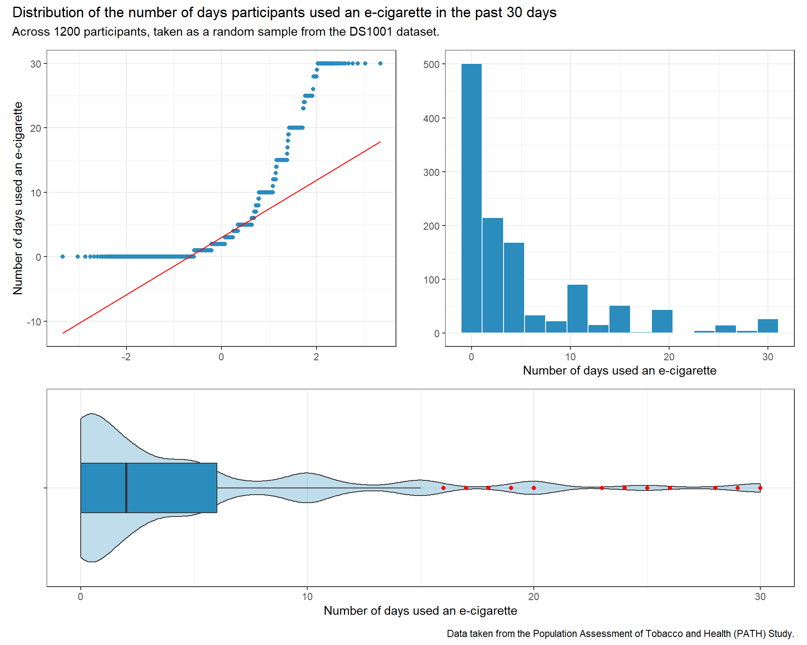
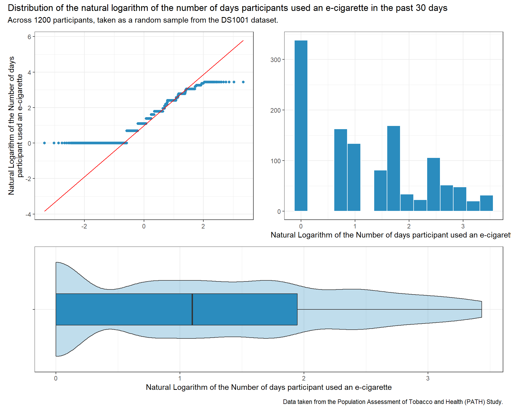
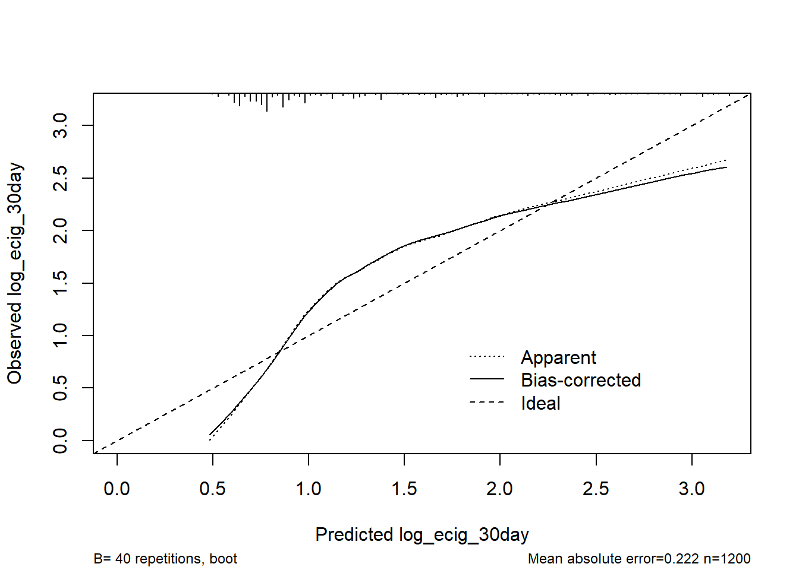
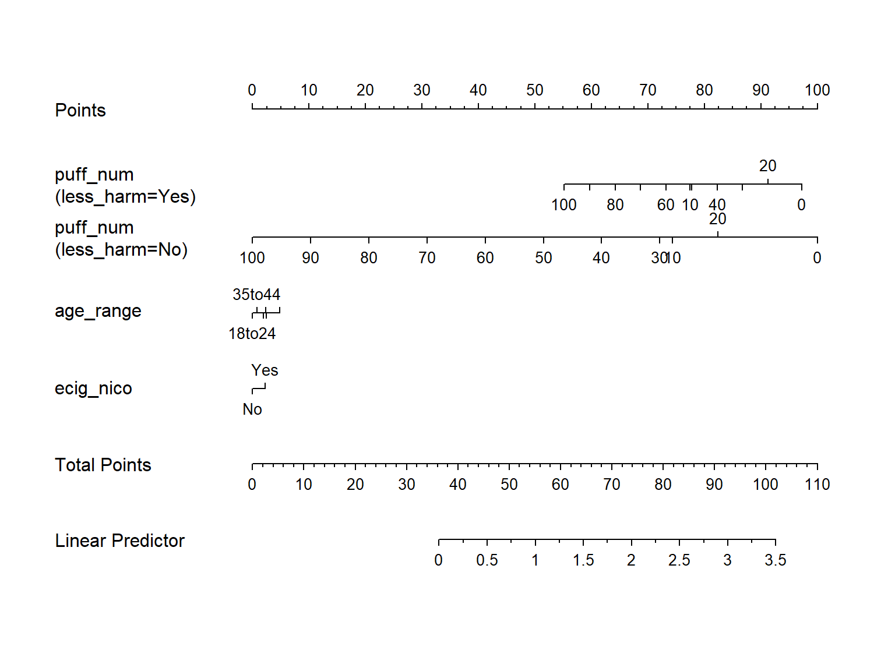
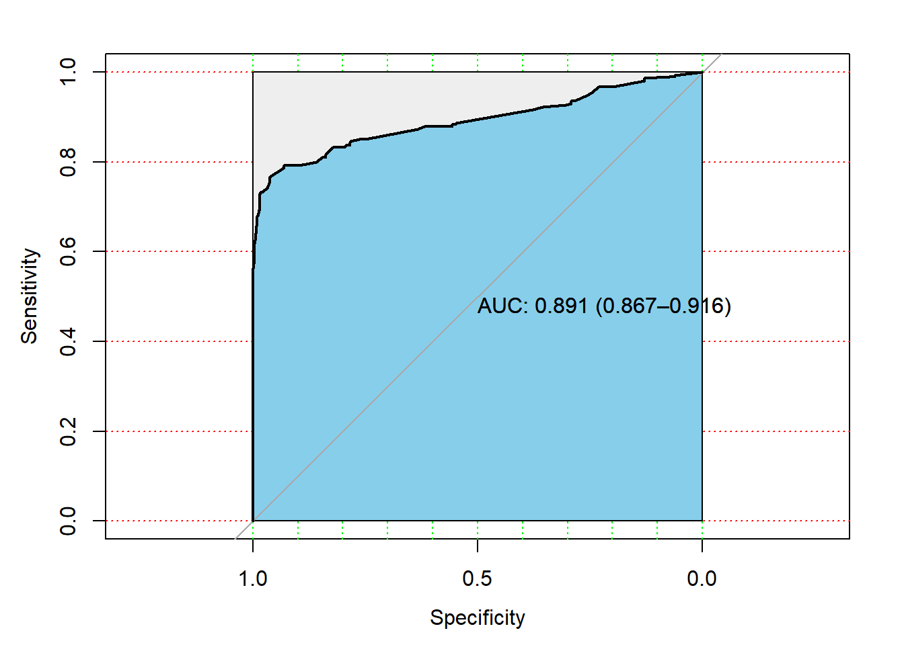

The data under study comes from the Population Assessment of Tobacco and Health (PATH) Study. It was obtained from ICPSR, the Inter-university Consortium for Political and Social Research.
The Population Assessment of Tobacco and Health (PATH) Study began originally surveying 45,971 adult and youth respondents. The study sampled over 150,000 mailing addresses across the United States to create a national sample of tobacco users and non-users, and is a collaboration between the National Institute on Drug Abuse (NIDA), National Institutes of Health (NIH), and the Center for Tobacco Products (CTP), Food and Drug Administration (FDA).
The data can be found at (https://www.icpsr.umich.edu/web/ICPSR/studies/36498/datadocumentation).
For adults, data was collected via interviews. Each case constitutes a single completed interview. Each case in a Youth data file represents one youth and his or her parent’s responses about that youth. Parents who provided permission for their child to participate in a Youth Interview were asked to complete a brief interview about their child. Youth who turn 18 by the current wave of data collection are considered “aged-up adults” and are invited to complete the Adult Interview.
2 The Subjects
The dataset from which data is being taken is Dataset 1001 (DS1001), which contains the data from the Wave 1 adult questionnaire. 45,971 adults and youth constitute the first (baseline) wave of data collected by this longitudinal cohort study.
The DS1001 data can be considered a random sample that constitutes a longitudinal cross section of adults(of age 18 and above) across the United States, since the PATH study sampled over 150,000 mailing addresses across the United States to create a national sample of tobacco users and non-users. The DS1001 data contains data on adults (individuals of age 18 and above) alone.
From the DS1001 dataset, individuals who used e-cigarettes at the time of the Wave 1 questionnaire were selected, excluding individuals who did not use e-cigarettes at that time. Dual users of e-cigarettes and other forms of tobacco were not excluded. The DS1001 dataset only contains data on adults, and thus youth below the age of 18 are excluded from the final dataset.
Individuals who had complete data on both outcomes under study were then selected. The resulting dataset had 3000 individuals. A random sample of 1200 individuals was taken from this subset, ensuring that the same respondents were taken for both analyses.
This sample of 1200 PATH study participants (contained in the tibble data_final) can thus be considered as a longitudinal cross-sectional sample of individuals who used e-cigarettes at the time of administering the Wave 1 questionnaire, who may or may not have used other tobacco products, across the United States, of ages 18 and above. Wave 1 began at September 2013 and ended at December 2014.
3 Loading and Tidying the Data
3.1 Loading the Raw Data
Access to the data requires users to log-in to the ICPSR website. Thus, a direct download is not possible. This data can be freely downloaded by the public, and therefore a local copy of the data in the form of a tsv file was read using read_tsv from the tidyverse.
The DS1001 dataset provides negative values for variables that are missing. There are several different subtypes of missing data:
Data removed due to respondent request
Data not ascertained
Respondent answer is “Don’t Know”
Respondent refused to answer
Question inapplicable to respondent
All of these values are negative in the original DS1001 dataset, and none of the variables under study have negative values. It is also not possible for the variables under study to have negative values. Therefore, all negative values were replaced with NA to ensure missing data are correctly identified.
The dataset was filtered to select only individuals who were users of e-cigarettes at the time of study. The dataset was then filtered to have complete cases on both the outcomes under study, namely ecig_30day and ecig_reg.
Code
data_outcome <- data_var |>filter(ecig_smoker ==1| ecig_smoker ==2)|># Excluding individuals who did not use e-cigarettes at the time of Wave 1 filter(complete.cases(ecig_30day, ecig_reg)) |>select(personid, ecig_30day,puff_num,age_range,less_harm,ecig_reg,harm_perc,price_paid,ecig_nico, ecig_flavored, min_num, ecig_smoker)dim(data_outcome)
[1] 3000 12
3000 respondents have information on both the outcome variables under study. After setting a seed for reproducibility, a random sample of 1200 respondents was taken from the data_outcome tibble. This was also done to ensure that the same respondents are analyzed for both regression models.
Code
set.seed(2023) data_complete <-slice_sample(data_outcome, n =1200)
Once a random sample was taken, the tabyl function was used to ensure that all individuals in the tibble data_complete were individuals who had used e-cigarettes.
From the documentation for the original variable name for ecig_smoker(R01_AE1003), the question asked was, ‘Do you now use e-cigarettes?’, with three possible levels.
Value
Label
Frequency
1
1 = Every day
41
2
2 = Some days
1159
3
3 = Not at all
0
The above table shows the distribution of the responses to the question, demonstrating that all the individuals under study are individuals who were using e-cigarettes at the time of the Wave 1 questionnaire. Individuals who did not use e-cigarettes at the time are not included in the random sample of 1200 respondents.
3.2.5 Working with Categorical Predictors
The tabyl function was used to check if all factor variables have atleast 30 observations at each level.
The harm_perc variable was found to have a level 3 which only had 23 observations. Factor levels 2 and 3 for harm_perc were collapsed into a single category.
The other factor variables were found to have at least 30 observations at each level. Furthermore, none of the categorical variables have more than 6 levels.
Once a random sample of 1200 respondents was taken, the data was separated into two tibbles for the purpose of describing the data under study for the two models. data_log denotes the dataset for the logistic regression, and data_lin denotes the dataset for the linear regression.
# A tibble: 1,200 × 12
personid ecig_30day puff_num age_range less_harm ecig_reg harm_perc
<chr> <int> <int> <fct> <fct> <fct> <fct>
1 P000319879 1 NA <18 Yes No less_harm
2 P000255041 0 NA 25to34 Yes Yes less_harm
3 P000413552 2 NA 35to44 Yes No same_or_more
4 P000239368 1 NA 45to54 Yes No less_harm
5 P000334022 1 NA 35to44 Yes No less_harm
6 P000151148 25 NA 45to54 Yes Yes less_harm
7 P000423889 2 NA 45to54 No No same_or_more
8 P000264820 24 4 35to44 No No less_harm
9 P000321341 2 NA 45to54 No No same_or_more
10 P000200073 2 NA 25to34 No No same_or_more
# ℹ 1,190 more rows
# ℹ 5 more variables: price_paid <fct>, ecig_nico <fct>, ecig_flavored <fct>,
# min_num <int>, ecig_smoker <fct>
4.2 Size and Identifiers
There are 1200 rows, with 12 columns in the final tibble data_final. One of these columns
Code
dim(data_final)
[1] 1200 12
The personid variable provides the identifier for each row in the tidy tibble. The n_distinct function was used to demonstrate 1200 individual values for personid in data_final, indicating that each row has a unique personid value.
Code
n_distinct(data_final$personid)
[1] 1200
4.3 Save The Tibble
The saveRDS function was used to save the tidy tibble in a .rds file.
Code
write_rds(data_final, file ="data_final.Rds")
5 The Code Book
5.1 Defining the Variables
Variable
Original DS1001 code
Description | Type | Analytic Role | Missing values
personid
PERSONID
Unique Participant Identifier
Character variable
Unique Identifier
0
ecig_30day
R01_AE1022
On how many of the past 30 days did the participant use an e-cigarette?
Quantitative Variable
Linear Regression Outcome
0
puff_num
R01_AE0103
How many puffs from an e-cigarette did the participant take the last time they smoked an e-cigarette?
Quantitative Variable
Predictor
849
age_range
R01R_A_AE1006
How old was the participant when they first used an e-cigarette, even one or two times?
6 levels:<18,18to24,
25to34,35to44,
45to54,>55
Multi-Categorical Variable with 6 factors
Predictor
8
less_harm
R01_AE1062
Did the participant use / used to use e-cigarettes because they might be / have been less harmful to them?
2 levels: yes, no
Binary Categorical Variable
Predictor
6
ecig_reg
R01_AE1100
Has the participant ever used e-cigarettes fairly regularly?
2 levels:yes,no
Binary Categorical Variable
Logistic regression Outcome
0
harm_perc
R01_AE1099
To the participant, is using e-cigarettes less harmful, about the same, or more harmful than smoking cigarettes?
2 levels:1,2
Binary Categorical Variable
Predictor
12
price_paid
R01_AE9004
About how much did the participant pay for their e-cigarette?
4 levels: Below$10,$10to$20,
$21t$100, >$100
Multi-Categorical Variable with 4 factors
Predictor
393
ecig_nico
R01_AE9010
Does the e-cigarette the participant usually uses contain nicotine?
2 levels:yes,no
Binary Categorical Variable
Predictor
832
ecig_flavored
R01_AE9010
Is the regular / last brand of e-cigarettes used by the participant flavored to taste like menthol, mint,clove, spice, candy, fruit, chocolate, alcohol or other sweets?
2 levels:yes,no
Binary Categorical Variable
Predictor
831
min_num
R01R_A_MINFIRST_ECIG
Amount of time from waking to smoking first e-cigarette of any given day (in minutes).
Quantitative Variable
Predictor
853
The levels of the categorical variables and their description are as follows:
age_range
How old was the participant when they first used an e-cigarette, even one or two times?
Level
Description
Distinct Observations in Level
<18
Less than 18 years old
54
18to24
18 to 24 years old
365
25to34
25 to 34 years old
276
35to44
35 to 44 years old
181
45to54
45 to 54 years old
169
>55
55 years old or older
147
less_harm
Did the participant use / used to use e-cigarettes because they might be / have been less harmful to them?
Level
Description
Distinct Observations in Level
yes
Yes
955
no
No
239
ecig_reg
Has the participant ever used e-cigarettes fairly regularly?
Level
Description
Distinct Observations in Level
yes
Yes
369
no
No
831
harm_perc
To the participant, is using e-cigarettes less harmful, about the same, or more harmful than smoking cigarettes?
Level
Description
Distinct Observations in Level
1
Less harmful
822
2
About the Same / More harmful
366
price_paid
About how much did the participant pay for their e-cigarette?
Level
Description
Distinct Observations in Level
Below$10
Less than $10
189
$10to$20
$10 to $20
260
$21to$100
$21 to $100
328
>$100
More than $100
30
ecig_nico
Does the e-cigarette the participant usually uses contain nicotine?
Level
Description
Distinct Observations in Level
yes
Yes
320
no
No
48
ecig_flavored
Is the regular/last brand of e-cigarettes used by the participant flavored to taste like menthol, mint, clove, spice, candy, fruit, chocolate, alcohol or other sweets?
Level
Description
Distinct Observations in Level
yes
Yes
246
no
No
123
5.2 Numerical Description
The describe function from the Hmisc package was used on the entire tibble.
Code
describe(data_final)
data_final
12 Variables 1200 Observations
--------------------------------------------------------------------------------
personid
n missing distinct
1200 0 1200
lowest : P000000176 P000000318 P000000457 P000001710 P000001806
highest: P000497409 P000498677 P000499021 P000499448 P000499846
--------------------------------------------------------------------------------
ecig_30day
n missing distinct Info Mean Gmd .05 .10
1200 0 28 0.972 5.11 6.663 0 0
.25 .50 .75 .90 .95
0 2 6 15 20
lowest : 0 1 2 3 4, highest: 25 26 28 29 30
--------------------------------------------------------------------------------
puff_num
n missing distinct Info Mean Gmd .05 .10
351 849 28 0.99 10.77 10.15 2 3
.25 .50 .75 .90 .95
4 6 10 25 30
lowest : 1 2 3 4 5, highest: 50 51 60 75 100
--------------------------------------------------------------------------------
age_range
n missing distinct
1192 8 6
Value <18 18to24 25to34 35to44 45to54 >55
Frequency 54 365 276 181 169 147
Proportion 0.045 0.306 0.232 0.152 0.142 0.123
--------------------------------------------------------------------------------
less_harm
n missing distinct
1194 6 2
Value Yes No
Frequency 955 239
Proportion 0.8 0.2
--------------------------------------------------------------------------------
ecig_reg
n missing distinct
1200 0 2
Value Yes No
Frequency 369 831
Proportion 0.308 0.693
--------------------------------------------------------------------------------
harm_perc
n missing distinct
1188 12 2
Value less_harm same_or_more
Frequency 822 366
Proportion 0.692 0.308
--------------------------------------------------------------------------------
price_paid
n missing distinct
807 393 4
Value Below$10 $10to$20 $21to$100 >$100
Frequency 189 260 328 30
Proportion 0.234 0.322 0.406 0.037
--------------------------------------------------------------------------------
ecig_nico
n missing distinct
368 832 2
Value Yes No
Frequency 320 48
Proportion 0.87 0.13
--------------------------------------------------------------------------------
ecig_flavored
n missing distinct
369 831 2
Value Yes No
Frequency 246 123
Proportion 0.667 0.333
--------------------------------------------------------------------------------
min_num
n missing distinct Info Mean Gmd .05 .10
347 853 30 0.993 149.1 182 3 5
.25 .50 .75 .90 .95
15 60 240 360 522
lowest : 1 2 3 4 5, highest: 720 780 840 900 1020
--------------------------------------------------------------------------------
ecig_smoker
n missing distinct
1200 0 2
Value 1 2
Frequency 41 1159
Proportion 0.034 0.966
--------------------------------------------------------------------------------
6 Linear Regression Plans
6.1 My First Research Question
E-Cigarette Perception, Smoking Habits, and their association with Heavy E-Cigarette Use:
Are smoking e-cigarettes that contain nicotine, the perception of the purported healthiness of e-cigarettes when compared to smoking regular cigarettes, and smoking habits strong predictors of heavy e-cigarette use in adulthood?
6.2 My Quantitative Outcome
The quantitative variable I will be predicting is ecig_30day.
In the United States, e-cigarettes are not subject to the same marketing and promotion restrictions that apply to cigarettes. E-cigarette companies are permitted to advertise their products through mass media, and via the internet. Previous studies have demonstrated that e-cigarettes companies exacerbate and expand the tobacco epidemic by bringing lower risk youth into the market.[1] E-Cigarette use among young adults has been rapidly expanding, and has surpassed conventional cigarette use among young adults.[2]
From a study conducted in 2017, while the demographic and behavioral risk profiles of most youth who reported smoking cigarettes (both cigarettes and e-cigarettes) are consistent with smoking cigarettes, the risk profiles of the remaining e-cigarette-only users (about 25% of e-cigarette users) suggested that these individuals would have been unlikely to have initiated tobacco product use with cigarettes.[3]
E-cigarettes are reducing smoking cessation rates and expanding the nicotine market by attracting low-risk youth who would be unlikely to initiate nicotine use with conventional cigarettes.[4]
By attempting to predict higher use of e-cigarettes in the past 30 days(at the time of data collection) with the variables under study, the association between e-cigarette perception and smoking habits with heavy e-cigarette use can be studied.
Out of the 1200 rows in data_lin, all 1200 have complete data on the outcome variable ecig_30day.
Code
p1 <-ggplot(data_lin, aes(x = ecig_30day)) +geom_histogram(bins =15, fill ="#2b8cbe", col ="white") +labs( x ="Number of days used an e-cigarette", y ="")p2 <-ggplot(data_lin, aes(sample = ecig_30day)) +geom_qq(col ="#2b8cbe") +geom_qq_line(col ="red") +labs(x ="", y ="Number of days used an e-cigarette")p3 <-ggplot(data_lin, aes(x ="", y = ecig_30day)) +geom_violin(fill ="#2b8cbe", alpha =0.3) +geom_boxplot(fill ="#2b8cbe", width =0.3,outlier.color ="red") +labs(y ="Number of days used an e-cigarette", x ="") +coord_flip()p2 + p1 - p3 +plot_layout(ncol =1, height =c(3, 2)) +plot_annotation(title ="Distribution of the number of days participants used an e-cigarette in the past 30 days",subtitle =glue("Across ", nrow(data_lin), " participants, taken as a random sample from the DS1001 dataset."),caption ="Data taken from the Population Assessment of Tobacco and Health (PATH) Study.")

The distribution is very notably right skewed. Taking the logarithm of the outcome variable might help in making it’s distribution more normalized.
The describe function shows that there are 28 distinct values for the ecig_30day variable, and the variable has at least 10 different, ordered, observed values.
6.3 My Planned Predictors (Linear Model)
The inputs that will be used in the linear regression model are:
puff_num: This is a quantitative variable that has atleast 10 distinct, ordered, observed values.
With 137 rows having complete observations on all the variables under study, [4 + (N1 - 100)/100] is 4.3, and the number of predictors does not exceed this value.
From the cited literature,
I expect higher values of puff_num to be associated with higher values of ecig_30day. For less_harm and ecig_nico, I expect the yes factor to be associated with higher values of ecig_30day, ie, as the two variables change from no to yes, the value of ecig_30day is expected to increase.
I expect the lower levels of age_range to be associated with higher values of ecig_30day, ie, as age_range factors go from the lowest factors to the higher factors, I expect ecig_30day to decrease.
7 Logistic Regression Plans
7.1 My Second Research Question
Regular e-cigarette use and it’s associated factors:
Are factors such as using flavored e-cigarettes, or needing to use e-cigarettes immediately after waking up, or using e-cigarettes with nicotine, or use of e-cigarettes as a healthier alternative to regular cigarettes associated with regular e-cigarette use?
7.2 My Binary Outcome
The binary outcome I will be predicting is ecig_reg.
In the United States, e-cigarettes and their market value have rapidly expanded over the past years.[2] E-cigarette use and it’s prevalent adoption have resulted in youth and young adults who would otherwise not have been exposed to nicotine/tobacco products to begin the use of the drug via e-cigarettes.[3]
Reasons for this increased use of e-cigarettes are many, including the perception of e-cigarettes as being healthier than regular cigarettes, the presence of flavored e-cigarettes available for use, and the availability of cheap, refillable cartridges that only require e-cigarette fluid.[1] By attempting to predict the odds of being a regular user of e-cigarettes using the predictors under study, the association between these factors and the odds of adoption of regular e-cigarette use can be more thoroughly studied.
With 369 subjects in the smaller of my two outcome groups, [4 + (N2 - 100)/100] is 6.69, and the number of predictors does not exceed this value.
From the cited literature,
I expect lower values of min_num to be associated with higher odds of being in the yes category of ecig_reg.I also expect lower values of price_paid to be associated with higher odds of being in the yes category of ecig_reg. I also expect yes values for ecig_nico and ecig_flavored to be associated with higher odds of being in the yes category of ecig_reg. I expect less_harm values for harm_perc to be associated with higher odds of being in the yes category of ecig_reg.
There is missing data in all of the variables under study, and the outcome variable ecig_30day does not have any missing values. There are missing predictor values for more than 10% of the subjects under study, and more than 50 subjects have missing values.
The data can be assumed to be MAR (Missing At Random), since the missing data are not randomly distributed. It cannot be assumed to be MNAR (Missing Not At Random) since there does not appear to be a relationship between the magnitude of a value and it’s missingness (or inclusion in the non-missing data), since there is no preponderance of values with lower or higher magnitude being missing.
Single imputation was then performed on the dataset, to account for missingness. The complete dataset, containing the data for both the analyses had it’s missing values imputed.
The distribution of the outcome variable was plotted.
Code
p1 <-ggplot(data_lin_i, aes(x = ecig_30day)) +geom_histogram(bins =15, fill ="#2b8cbe", col ="white") +labs( x ="Number of days used an e-cigarette", y ="")p2 <-ggplot(data_lin_i, aes(sample = ecig_30day)) +geom_qq(col ="#2b8cbe") +geom_qq_line(col ="red") +labs(x ="", y ="Number of days used an e-cigarette")p3 <-ggplot(data_lin_i, aes(x ="", y = ecig_30day)) +geom_violin(fill ="#2b8cbe", alpha =0.3) +geom_boxplot(fill ="#2b8cbe", width =0.3,outlier.color ="red") +labs(y ="Number of days used an e-cigarette", x ="") +coord_flip()p2 + p1 - p3 +plot_layout(ncol =1, height =c(3, 2)) +plot_annotation(title ="Distribution of the number of days participants used an e-cigarette in the past 30 days",subtitle =glue("Across ", nrow(data_lin_i), " participants, taken as a random sample from the DS1001 dataset."),caption ="Data taken from the Population Assessment of Tobacco and Health (PATH) Study.")
The outcome variable was modified so that the data would be strictly positive, making it possible to assess the need for transformation. 1 was added to each value.
The Box-Cox plot peaks at a Y value of -0.19, which is approximately close enough to -1 to justify using -1 on Tukey’s ladder of power transformations, which suggests taking the inverse of the outcome.
Code
p1 <-ggplot(data_lin_i, aes(x =log(int_ecig_30day))) +geom_histogram(bins =15, fill ="#2b8cbe", col ="white") +labs( x ="Natural Logarithm of the Number of days participant used an e-cigarette", y ="")p2 <-ggplot(data_lin_i, aes(sample =log(int_ecig_30day))) +geom_qq(col ="#2b8cbe") +geom_qq_line(col ="red") +labs(x ="", y =str_wrap("Natural Logarithm of the Number of days participant used an e-cigarette", width =50))p3 <-ggplot(data_lin_i, aes(x ="", y =log(int_ecig_30day))) +geom_violin(fill ="#2b8cbe", alpha =0.3) +geom_boxplot(fill ="#2b8cbe", width =0.3,outlier.color ="red") +labs(y ="Natural Logarithm of the Number of days participant used an e-cigarette", x ="") +coord_flip()p2 + p1 - p3 +plot_layout(ncol =1, height =c(3, 2)) +plot_annotation(title ="Distribution of the natural logarithm of the number of days participants used an e-cigarette in the past 30 days",subtitle =glue("Across ", nrow(data_lin_i), " participants, taken as a random sample from the DS1001 dataset."),caption ="Data taken from the Population Assessment of Tobacco and Health (PATH) Study.")

8.3 Scatterplot Matrix and Collinearity
A new variable log_ecig_30day was created by taking the natural logarithm of the outcome variable, which itself was modified by adding 1 to each of it’s values.
mod_A was fit using the lm function. The vif function from the car package was used to estimate if the variables had significant collinearity with each other.
From the output, the variables do not seem to have significant collinearity with each other.
8.4 Model A
8.4.1 Fitting Model A
Model A was fit using both lm and ols. The outcome variable is log_ecig_30day, and the predictors are puff_num (A Quantitative variable), age_range (A multi-categorical variable), less_harm and ecig_nico(both binary variables).
From the normal Q-Q plot, there appears to be serious problems with the assumption of normality, despite the transformation of the outcome variable. There is also a definite pattern in the residuals vs fitted values plot, which has implications regarding the assumption of linearity. The scale-location plot also has a definite non-linear pattern, indicating problems with the assumption of constant variance.
8.5 Non-Linearity
Adding a non-linear term to model A might help with the problems visualized with the various assumptions made in a linear regression model. A Spearman \(p^2\) plot was made with the predictors in model A.
From the plot, if a non-linear term were to improve the fit of the model, the predictor most likely to do so would be puff_num, followed much less closely by less_harm.
A restricted cubic spline with 4 knots in puff_num was then added to the model, spending 2 additional degrees of freedom as compared to model A (with the main effect of puff_num).
An interaction term between the main effects of puff_num and less_harm was added to the model, spending a single additional degree of freedom.
Overall, this would result in 3 additional degrees of freedom being spent.
8.6 Model B
8.6.1 Fitting Model B
Using lm and ols, model B was fit, using a restricted cubic spline on puff_num and an interaction term between the main effects of puff_num and less_harm.
The residual plots are improved from the plots in model A. The q-q plot follows a more normal distribution. The residuals vs fitted values plot shows a more linear line, and the scale-location plot shows a more linear model as well. The assumptions of normality, linearity and constant variance are adhered to more rigorously in the residuals of model B, as compared to model A.
While there are significant outliers in the q-q plot, the residuals vs leverage plot does not show points that have a Cook’s distance of more than 0.5, indicating that these outliers do not exert an undue influence on the model. There are points that have an unusual combination of predictor variables, but their influence on the model is not significant.
8.7 Validating Models A and B
After setting a seed, the data_lin_i dataset was divided into a training and a testing sample. Two models were created, one model with linear terms alone, and the other model with the non-linear terms recommended by the Spearman \(p^2\) plot. The coefficients obtained from these models were then used to obtain the predicted log_ecig_30day values in the holdout test sample.
Functions from the yardstick package were used to obtain key summary of fit statistics for both the models’ predictions of the holdout testing sample. The metrics were then placed in a tibble and displayed using kable.
Code
mod_A_train <-ols(log_ecig_30day ~ puff_num + age_range + less_harm + ecig_nico, data = data_lin_train)mod_B_train <-ols(log_ecig_30day ~rcs(puff_num,4) + age_range + less_harm + ecig_nico + puff_num%ia%less_harm,data = data_lin_train )mod_A_test_aug <-augment(mod_A, newdata = data_lin_test)mod_B_test_aug <-augment(mod_B, newdata = data_lin_test)rep1 <-rmse(data = mod_A_test_aug, truth = log_ecig_30day, estimate = .fitted)rep2 <-rmse(data = mod_B_test_aug, truth = log_ecig_30day, estimate = .fitted)rep3 <-rsq(data = mod_A_test_aug, truth = log_ecig_30day, estimate = .fitted)rep4 <-rsq(data = mod_B_test_aug, truth = log_ecig_30day, estimate = .fitted)rep5 <-mae(data = mod_A_test_aug, truth = log_ecig_30day, estimate = .fitted)rep6 <-mae(data = mod_B_test_aug, truth = log_ecig_30day, estimate = .fitted)rep_full <-bind_rows(rep1, rep2, rep3, rep4, rep5, rep6)rep_full <- rep_full |>mutate(Models =c("Model A Holdout RMSE","Model B Holdout RMSE","Model A Holdout $R^2$","Model B Holdout $R^2$","Model A Holdout MAE","Model B Holdout MAE"))rep_full <- rep_full |>select(Models, Metric = .metric, Estimate = .estimate)rep_full |>kbl() |>kable_classic_2(font_size =24,full_width = F)
Models
Metric
Estimate
Model A Holdout RMSE
rmse
0.9562983
Model B Holdout RMSE
rmse
0.7614010
Model A Holdout $R^2$
rsq
0.1708639
Model B Holdout $R^2$
rsq
0.4727390
Model A Holdout MAE
mae
0.8158778
Model B Holdout MAE
mae
0.6037231
8.7.1 Holdout RMSE, \(R^2\) and MAE
Model
Holdout RMSE
Holdout \(R^2\)
Holdout MAE
A
0.9563
0.1709
0.8159
B
0.7614
0.4727
0.5992
8.7.2 Validated \(R^2\), MSE and IC statistics
After setting a seed, the validate function was used to obtain the validated R-squared and MSE values for models A and B.
This ANOVA table shows that model B has 3 additional degrees of freedom as compared to model A, and that adding non linear terms has resulted in a significant improvement in the predictive power of the model.
8.8 Final Linear Regression Model
I prefer Model B, because:
Model B has a higher validated \(R^2\), and a higher holdout sample \(R^2\).
Model B has a lower validated MSE (Mean Squared Error) and a lower holdout RMSE.
Model B has a lower holdout MAE, and a lower AIC and BIC.
Model B’s residual plots show that the assumptions of linearity, normality and non-heteroscedasticity are not violated.
8.8.1 Winning Model’s Parameter Estimates
The model B’s raw and adjusted \(R^2\) were obtained.
Code
mod_B_ols
Linear Regression Model
ols(formula = log_ecig_30day ~ rcs(puff_num, 4) + age_range +
less_harm + ecig_nico + puff_num %ia% less_harm, data = data_lin_i,
x = TRUE, y = TRUE)
Model Likelihood Discrimination
Ratio Test Indexes
Obs 1200 LR chi2 757.68 R2 0.468
sigma0.7670 d.f. 11 R2 adj 0.463
d.f. 1188 Pr(> chi2) 0.0000 g 0.745
Residuals
Min 1Q Median 3Q Max
-3.17538 -0.63628 0.04184 0.48501 2.62802
Coef S.E. t Pr(>|t|)
Intercept 3.4764 0.2139 16.26 <0.0001
puff_num -0.6200 0.0398 -15.57 <0.0001
puff_num' 11.4717 0.4931 23.26 <0.0001
puff_num'' -57.3292 2.3822 -24.07 <0.0001
age_range=18to24 -0.1032 0.1119 -0.92 0.3568
age_range=25to34 0.0197 0.1143 0.17 0.8635
age_range=35to44 -0.0605 0.1190 -0.51 0.6115
age_range=45to54 0.0246 0.1199 0.20 0.8377
age_range=>55 0.1549 0.1224 1.27 0.2059
less_harm=No 0.1445 0.1136 1.27 0.2037
ecig_nico=No -0.1206 0.0678 -1.78 0.0756
puff_num * less_harm=No -0.0309 0.0141 -2.19 0.0290
8.8.2 Model Coefficients
Model B’s coefficients were obtained with 90% confidence intervals and presented using kable.
The coefficients for the non-linear term are significantly larger than expected. Given that the outcome of interest is a count outcome, and the predictor (puff_num) has a very intuitive relationship with the outcome variable, in that individuals who have a zero for their outcome (ecig_30day) could be expected to have significantly lower (or even zero) values of puff_num, and individuals with any particular value of puff_num would have a collinear relationship with the outcome variable. It can be reasonably expected that the model is being driven significantly towards a particular value of log_ecig_30day, which could result in the exploding coefficients seen in the table of coefficients.
This indicates that model B is not the ideal sort of model to be used for a count outcome like ecig_30day.
Following this, the validated \(R^2\) was also obtained, along with the validated MSE.
An ANOVA test performed on mod_B_ols shows that a non linear term (a restricted cubic spline with 4 knots) on puff_num had significant impact on the predictive ability of model B, along with the interaction term between the main effect of puff_num and less_harm.
Code
anova(mod_B_ols)
Analysis of Variance Response: log_ecig_30day
Factor d.f. Partial SS
puff_num (Factor+Higher Order Factors) 4 589.511975
All Interactions 1 2.813085
Nonlinear 2 425.614545
age_range 5 8.073412
less_harm (Factor+Higher Order Factors) 2 3.811854
All Interactions 1 2.813085
ecig_nico 1 1.860506
puff_num * less_harm (Factor+Higher Order Factors) 1 2.813085
TOTAL NONLINEAR + INTERACTION 3 428.235704
REGRESSION 11 615.229768
ERROR 1188 698.931962
MS F P
147.3779937 250.50 <.0001
2.8130849 4.78 0.0290
212.8072723 361.72 <.0001
1.6146824 2.74 0.0179
1.9059270 3.24 0.0395
2.8130849 4.78 0.0290
1.8605056 3.16 0.0756
2.8130849 4.78 0.0290
142.7452346 242.63 <.0001
55.9299789 95.07 <.0001
0.5883266
The ANOVA table shows that model B has 12 total degrees of freedom, with 4 non-linear terms of freedom.
From the summary above, for the puff_num coefficient, in model mod_b_ols,
We can conclude that the estimated effect of moving puff_num from 5.76 to 7.05 results in an increase of 0.597 in log_ecig_30day, with 90% confidence intervals of 0.595 to 0.733. IE, for model B,
As an individual’s number of e-cigarette puffs taken the last time they smoked an e-cigarette increases from 5.76 to 7.05, the predicted logarithm of the number of days they smoked an e-cigarette in the past 30 days (plus one day) increases by 0.597, with 90% CI(0.561 to 0.633), provided the individual’s age when they began smoking, their perception of the harmfulness of e-cigarettes, and their use or lack thereof of nicotine containing e-cigarettes are all held constant.
Given that this confidence interval does not include 0, this is a scientifically meaningful effect.
8.8.4 Model Calibration
Code
set.seed(4322023); plot(calibrate(mod_B_ols))

n=1200 Mean absolute error=0.222 Mean squared error=0.06564
0.9 Quantile of absolute error=0.364
The model does not appear to be particularly well calibrated. It under-predicts at the high and low ends of the actual log_ecig_30day values, and over-predicts elsewhere.
For two subjects with the same age range at which they started smoking e-cigarettes, the same perception of the harmfulness of e-cigarettes, the same kind of usage or lack thereof of e-cigarettes containing nicotine, and if one subject took 5.76 e-cigarette puffs the last time they smoked an e-cigarette, and the other took 7.05 e-cigarettes puffs 7.05 the last time they smoked an e-cigarette, the model estimates that subject 1 will have a log(number of days smoked in the past 30 days + 1) value 0.597 units higher than subject 2’s log(number of days smoked in the past 30 days + 1). The 90% confidence interval for that estimate ranges from 0.561 to 0.633.
8.8.6 Nomogram of Winning Model
Code
plot(nomogram(mod_B_ols))

8.8.7 Prediction for a New Subject
A new theoretical subject, who took 5 puffs from an e-cigarette the last time they smoked an e-cigarette, who started smoking e-cigarettes when they were under 18, who uses e-cigarettes because they thought e-cigarettes might be less harmful to them than regular cigarettes, who usually uses an e-cigarette containing nicotine, was created. Their predicted log_ecig_30day value was then obtained and exponentiated. 1 was added to the exponentiated value to complete the transformation back into the original value.
There is missing data in all of the variables under study, and the outcome variable ecig_reg does not have any missing values. There are missing predictor values for more than 10% of the subjects under study, and more than 50 subjects have missing values.
The data can be assumed to be MAR (Missing At Random), since the missing data are not randomly distributed. It cannot be assumed to be MNAR (Missing Not At Random) since there does not appear to be a relationship between the magnitude of a value and it’s missingness (or inclusion in the non-missing data), since there is no preponderance of values with lower or higher magnitude being missing.
Single imputation was already performed on the complete dataset, to account for missingness. The logistic regression dataset was selected.
A temporary dataset, log_i_temp, for the putpose of generating a confusion matrix, was created. The outcome variable ecig_reg had it’s levels changed from “Yes” and “No” to 1 and 0.
The Spearman plot suggests the use of a non-linear term in min_num, so a restricted cubic spline with 4 knots in min_num will be added to the model, spending two additional degrees of freedom than the main effects model.
An interaction term between the main effect of ecig_flavored and min_num will be added, spending an additional degree of freedom.
9.4 Model Z
Model Z will add a total of 3 additional degrees of freedom to Model Y, using two non-linear terms.
As in Model Y, my prediction rule is that the fitted value of pr(ecig_reg = 1) needs to be greater than or equal to 0.5 for me to predict that ecig_reg is 1.
For two individuals, subject 1 and 2, who have their first e-cigarette puff of the day the same number of minutes after waking up, who both use nicotine containing e-cigarettes, who have the same perception of the harmfulness of e-cigarettes in comparison to regular cigarettes, and use flavored e-cigarettes, and subject 1 pays less than 10 dollars for their e-cigarettes, and subject 2 pays between 21 to a 100 dollars for their e-cigarettes, according to model Z, the ratio of the odds of subject 1 being a regular e-cigarette smoker to the odds of subject 2 being a regular e-cigarette smoker is 17.465 The 90% confidence intervals around this estimate are (8.69 to 35.09).
Given that this interval does not include 1, this is a meaningful effect.
9.6.4 Plot of ROC Curve for Winning Model
The roc function from the pROC package was used to obtain the ROC curve for model Z(the lrm model). The dataset with the outcome variable recoded as “Yes” = 1, “No” = 0 was used.
plot(roc.mod, auc.polygon =TRUE, print.auc =TRUE,max.auc.polygon =TRUE,grid=c(0.1, 0.2),grid.col =c("green", "red"),auc.polygon.col ="skyblue",title ="ROC Curve for Model Z (lrm) with the AUC score")

9.6.5 Validated \(R^2\) and \(C\) statistic for Winning Model
E-Cigarette Perception, Smoking Habits, and their association with Heavy E-Cigarette Use:
Are smoking e-cigarettes that contain nicotine, the perception of the purported healthiness of e-cigarettes when compared to smoking regular cigarettes, and smoking habits strong predictors of heavy e-cigarette use in adulthood?
Code
# Transforming the coefficients of Model B back to the original variable's scaletidy_mod_B |>mutate(estimate =sprintf("%.2f",(exp(estimate) -1)),conf.low =sprintf("%.2f",(exp(conf.low) -1)),conf.high =sprintf("%.2f",(exp(conf.high) -1))) |>select(term,estimate,conf.low,conf.high, p.value) |>kbl(digits =3) |>kable_classic_2(font_size =24, full_width = F)
term
estimate
conf.low
conf.high
p.value
(Intercept)
31.34
21.74
44.99
0.000
rcs(puff_num, 4)puff_num
-0.46
-0.50
-0.43
0.000
rcs(puff_num, 4)puff_num'
95957.21
42612.78
216078.82
0.000
rcs(puff_num, 4)puff_num''
-1.00
-1.00
-1.00
0.000
age_range18to24
-0.10
-0.25
0.08
0.357
age_range25to34
0.02
-0.16
0.23
0.863
age_range35to44
-0.06
-0.23
0.15
0.612
age_range45to54
0.02
-0.16
0.25
0.838
age_range>55
0.17
-0.05
0.43
0.206
less_harmNo
0.16
-0.04
0.39
0.204
ecig_nicoNo
-0.11
-0.21
-0.01
0.076
puff_num %ia% less_harm
-0.03
-0.05
-0.01
0.029
E-CIGARETTE PUFFS PER DAY:
Higher number of puffs taken per day are correlated with a higher number of days an e-cigarette was smoked in the past 30 days, provided all other variables are held constant. This is evident from the confidence intervals of puff_num, which do not include zero.
USAGE OF E-CIGARETTES WITH NICOTINE:
The usage of e-cigarettes that do not contain nicotine are associated with a significantly lower number of days an e-cigarette was smoked by a study participant in the past 30 days, provided all other variables are held constant.
The point estimate for this effect is -0.11, with 90%CI(-0.21 to -0.01). Given that the confidence interval does not include zero, this is a meaningful effect. (p = 0.076)
E-CIGARETTE SMOKING INITIATION AGE:
Initiation of e-cigarette smoking at a younger age does not have a meaningful correlation with heavy e-cigarette smoking by an individual in the past 30 days, provided all other variables are held constant. This is evident from the confidence intervals for the different levels of age_range, all of which contain zero, when compared to the number of days an e-cigarette was smoked in the past 30 days by individuals who initiated e-cigarette smoking when they were less than 18 years of age.
PERCEPTION OF THE HARMFULNESS OF E-CIGARETTES COMPARED TO REGULAR CIGARETTES:
The perception of the supposed healthiness of e-cigarettes when compared to regular cigarettes do not have a meaningful correlation with an individual’s e-cigarette smoking in the past 30 days, provided all other variables are held constant. This is evident from the confidence intervals for the term less_harmNo from the table of model B’s coefficients, which include zero. (p = 0.204)
In summation, to answer my first research question,
Factors such as a higher number of puffs taken from an e-cigarette daily, and usage of nicotine-containing e-cigarettes are correlated with heavier smoking habits over the past 30 days.
Factors such as an individual’s perception of the supposed healthiness of e-cigarettes when compared to regular cigarettes, and their age when they began smoking e-cigarettes, do not have a meaningful impact on an individual’s smoking habits over the past 30 days.
10.1.2 My Second Research Question
Regular e-cigarette use and it’s associated factors:
Are factors such as using flavored e-cigarettes, or needing to use e-cigarettes immediately after waking up, or using e-cigarettes with nicotine, or use of e-cigarettes as a healthier alternative to regular cigarettes associated with regular e-cigarette use?
TIME TAKEN FOR THE FIRST E-CIGARETTE PUFF OF THE DAY
Individuals who need to use e-cigarettes within an hour or an hour and a half of waking up have detectable higher odds of identifying as regular users of e-cigarettes, provided the other variables are held constant. This is evident in the 90% confidence intervals for the odds ratio in the coefficient table, which does not include 1.
USAGE OF FLAVORED E-CIGARETTES:
Individuals who do not use flavored e-cigarettes have detectable lower odds of identifying as regular users of e-cigarettes, provided the other variables are held constant. This is evident in the 90% confidence intervals for the odds ratio in the coefficient table, which does not include 1. The point estimate for this odds ratio is 0.07, with 90% confidence intervals (0.03 to 0.13). Individuals who do not use flavored e-cigarettes have only 0.07 times the odds(90%CI 0.03 to 0.13) of identifying as regular e-cigarette smokers, compared to individuals who do use flavored e-cigarettes.
COST OF E-CIGARETTE BRAND:
Individuals who pay less than 10 dollars for their e-cigarettes have detectably higher odds of identifying as regular e-cigarettes, as compared to individuals who paid anywhere between 21 to 100 dollars for their e-cigarette, provided the other variables are held constant. This is evident in the 90% confidence intervals for the odds ratio in the coefficient table, which do not include zero. Similarly, individuals who pay anywhere between 10 to 20 dollars for their e-cigarette also have detectably higher odds of identifying as regular e-cigarette smokers
However, individuals who pay more than 100 dollars for their e-cigarettes do not have meaningfully different odds of identifying as regular e-cigarette smokers compared to individuals who pay anywhere between 21 to 100 dollars for their e-cigarettes, provided the other variables remain constant. This is evident in the 90% confidence intervals for the odds ratio of this effect in the coefficient table, which includes 1.
USAGE OF E-CIGARETTES CONTAINING NICOTINE:
Individuals who do not use e-cigarettes with nicotine do not have meaningfully different odds of identifying as regular e-cigarette smokers compared to individuals who use e-cigarettes containing nicotine, provided the other variables are held constant. The 90% confidence intervals for the odds ratio of this effect includes 1.
PERCEPTION OF THE HARMFULNESS OF E-CIGARETTES AS COMPARED TO REGULAR CIGARETTES:
Individuals who perceive e-cigarettes as being the same or more harmful than regular e-cigarettes do not have meaningfully different odds of identifying as regular e-cigarette smokers compared to individuals who perceive e-cigarettes as being less harmful than regular e-cigarettes, provided the other variables are held constant. The odds ratio for this effect includes 1.
In summation, to answer my second research question,
Factors such as needing to use e-cigarettes immediately after waking up, using flavored e-cigarettes, and using cheaper e-cigarette brands are all associated with detectably higher odds of identifying as a regular e-cigarette user, provided the other variables are held constant.
Factors such as the usage of nicotine containing e-cigarettes, and the perceptiom of the harmfulness of e-cigarettes as compared to regular cigarettes do not have a meaningful impact on the odds of identifying as a regular e-cigarette user, provided all other variables remain constant.
10.2 Limitations and Next Steps
10.2.1 Model B and it’s limitations
Given that model B was predicting a count outcome, and given then the outcome was transformed using a logarithm transformation after adding a non-zero integer to the outcome, the resulting model is very highly driven by the puff_num variable, resulting in exploding coefficients for the restricted cubic spline applied on puff_num.
Model B outperformed Model A on all metrics that were studied. Visualization of the transformed outcome variable showed why that was the case, given the non-linear, skewed nature of the data under study. The data lent itself very well towards a non-linear term, even if the restricted cubic spline had exploding coefficients.
This outcome could be better modeled with a Poisson regression, and by using a larger dataset with lesser missing values. The next ideal step would be to expand the dataset to more than 1200, and model the outcome using a Poisson regression.
10.2.2 Model Z and it’s limitations
The glm fit of the model produced a warning stating that predicted probabilities of 0 or 1 had occurred. Given that the data under analysis had a large amount of missingness, imputation possibly skewed the model towards one direction or the other. It is important to note that this warning was only produced in the glm model, while the lrm model did not produce such a warning.
This model could be improved by vastly expanding the sample size, minimizing the effect of the missing data and smoothing out the predicted probabilites so that the preceding skew does not repeat itself.
10.3 Thoughts on Project A
Project A was more difficult than I expected it to be. I went in knowing it would take a decent amount of work and effort, and I was reasonably confident that I could tackle it, since I knew my experience in 431 had already helped prepare me for the work that would be required. The hardest part of Project A was dealing with the large number of missing values. The impact of imputation on both models was significant, and discussing the limitations and understanding how the models could be improved was a difficult task, although I did learn a lot from the difficulty I had with the data.
At the end of Project A, I wished that I had chosen a non count outcome for the linear regression.We hadn’t covered count outcomes at the time of submission of the Plan, and if I’d known the difficulties inherent in using linear regression for a count outcome when I started, I would have picked a different outcome variable.
11 Affirmation
I am certain that it is completely appropriate for these data to be shared with anyone, without any conditions. There are no concerns about privacy or security.
12 References
[1] Singh, T., Arrazola, R. A., Corey, C. G., Husten, C. G., Neff, L. J., Homa, D. M., & King, B. A. (2016). Tobacco use among middle and high school students—United States, 2011–2015. Morbidity and mortality weekly report, 65(14), 361-367.
[2] Dutra, L. M., & Glantz, S. A. (2014). High international electronic cigarette use among never smoker adolescents. Journal of Adolescent Health, 55(5), 595-597.
[3] Dutra, L. M., & Glantz, S. A. (2017). E-cigarettes and national adolescent cigarette use: 2004–2014. Pediatrics, 139(2).
[4] Glantz, S. A., & Bareham, D. W. (2018). E-cigarettes: use, effects on smoking, risks, and policy implications. Annual review of public health, 39, 215-235.
[5] United States Department of Health and Human Services. National Institutes of Health. National Institute on Drug Abuse, and United States Department of Health and Human Services. Food and Drug Administration. Center for Tobacco Products. Population Assessment of Tobacco and Health (PATH) Study [United States] Public-Use Files. Inter-university Consortium for Political and Social Research [distributor], 2022-10-07. https://doi.org/10.3886/ICPSR36498.v17
---title: "Predictors of Heavy E-Cigarette Use among Adults in the United States"subtitle: "An analysis of the Population Assessment of Tobacco and Health (PATH) Study."author: "Naveen Kannan"date: 2023-03-19format: html: toc: true number-sections: true code-fold: show code-tools: true code-overflow: wrap date-format: iso---## R Packages and Setup {.unnumbered}```{r}#| message: false#| warning: falseknitr::opts_chunk$set(comment =NA) library(broom)library(janitor) library(naniar)library(glue)library(rsample)library(yardstick)library(GGally)library(mice)library(car)library(pROC)library(patchwork)library(rms)library(simputation)library(kableExtra)library(tidyverse)theme_set(theme_bw()) ```# Data SourceThe data under study comes from the Population Assessment of Tobacco and Health (PATH) Study. It was obtained from ICPSR, the Inter-university Consortium for Political and Social Research.The Population Assessment of Tobacco and Health **(PATH)** Study began originally surveying 45,971 adult and youth respondents. The study sampled over 150,000 mailing addresses across the United States to create a national sample of tobacco users and non-users, and is a collaboration between the National Institute on Drug Abuse (NIDA), National Institutes of Health (NIH), and the Center for Tobacco Products (CTP), Food and Drug Administration (FDA).The data can be found at (https://www.icpsr.umich.edu/web/ICPSR/studies/36498/datadocumentation).For adults, data was collected via interviews. Each case constitutes a single completed interview. Each case in a Youth data file represents one youth and his or her parent's responses about that youth. Parents who provided permission for their child to participate in a Youth Interview were asked to complete a brief interview about their child. Youth who turn 18 by the current wave of data collection are considered "aged-up adults" and are invited to complete the Adult Interview.# The SubjectsThe dataset from which data is being taken is **Dataset 1001 (DS1001)**, which contains the data from the Wave 1 adult questionnaire. 45,971 adults and youth constitute the first (baseline) wave of data collected by this longitudinal cohort study.The DS1001 data can be considered a random sample that constitutes a longitudinal cross section of adults(of age 18 and above) across the United States, since the PATH study sampled over 150,000 mailing addresses across the United States to create a national sample of tobacco users and non-users. The DS1001 data contains data on adults (individuals of age 18 and above) alone.From the DS1001 dataset, individuals who used e-cigarettes at the time of the Wave 1 questionnaire were selected, excluding individuals who did not use e-cigarettes at that time. Dual users of e-cigarettes and other forms of tobacco were not excluded. The DS1001 dataset only contains data on adults, and thus youth below the age of 18 are excluded from the final dataset.Individuals who had complete data on both outcomes under study were then selected. The resulting dataset had 3000 individuals. A random sample of 1200 individuals was taken from this subset, ensuring that the same respondents were taken for both analyses.This sample of 1200 PATH study participants (contained in the tibble data_final) can thus be considered as a longitudinal cross-sectional sample of individuals who used e-cigarettes at the time of administering the Wave 1 questionnaire, who may or may not have used other tobacco products, across the United States, of ages 18 and above. Wave 1 began at September 2013 and ended at December 2014.# Loading and Tidying the Data## Loading the Raw DataAccess to the data requires users to log-in to the ICPSR website. Thus, a direct download is not possible. This data can be freely downloaded by the public, and therefore a local copy of the data in the form of a tsv file was read using `read_tsv` from the tidyverse.```{r}#data_raw <- read_tsv("36498-1001-Data.tsv", show_col_types = FALSE)#saveRDS(data_raw, "36498-1001-Data.Rds")data_raw =readRDS("36498-1001-Data.Rds")```## Cleaning the Data### Selecting Variables We'll Use```{r}data_var <- data_raw |>select(PERSONID,R01_AE1022,R01_AE0103,R01R_A_AE1006,R01_AE1062,R01_AE1100,R01_AE1099,R01_AE9004,R01_AE9010,R01_AE1050,R01R_A_MINFIRST_ECIG, R01_AE1003)```### Dealing with MissingnessThe DS1001 dataset provides negative values for variables that are missing. There are several different subtypes of missing data:- Data removed due to respondent request- Data not ascertained- Respondent answer is "Don't Know"- Respondent refused to answer- Question inapplicable to respondentAll of these values are negative in the original DS1001 dataset, and none of the variables under study have negative values. It is also not possible for the variables under study to have negative values. Therefore, all negative values were replaced with `NA` to ensure missing data are correctly identified.```{r}data_var <- data_var|>mutate(across(everything(), function(x){replace(x, which(x<0), NA)}))```### Changing Variable NamesThe variables were renamed to have better, more readable names.```{r}data_var <- data_var|>mutate(ecig_30day =as.integer(R01_AE1022),puff_num =as.integer(R01_AE0103),age_range =factor(R01R_A_AE1006),less_harm =factor(R01_AE1062),ecig_reg =factor(R01_AE1100),harm_perc =factor(R01_AE1099),price_paid =factor(R01_AE9004),personid =as.character(PERSONID),ecig_nico =as.factor(R01_AE9010),ecig_flavored =as.factor(R01_AE1050),min_num =as.integer(R01R_A_MINFIRST_ECIG),ecig_smoker =factor(R01_AE1003)) |>select(personid, ecig_30day,puff_num,age_range,less_harm,ecig_reg,harm_perc,price_paid,ecig_nico, ecig_flavored, min_num, ecig_smoker)data_var <- data_var |>clean_names() ```### Sampling the DataThe dataset was filtered to select only individuals who were users of e-cigarettes at the time of study. The dataset was then filtered to have complete cases on both the outcomes under study, namely `ecig_30day` and `ecig_reg`.```{r}data_outcome <- data_var |>filter(ecig_smoker ==1| ecig_smoker ==2)|># Excluding individuals who did not use e-cigarettes at the time of Wave 1 filter(complete.cases(ecig_30day, ecig_reg)) |>select(personid, ecig_30day,puff_num,age_range,less_harm,ecig_reg,harm_perc,price_paid,ecig_nico, ecig_flavored, min_num, ecig_smoker)dim(data_outcome)```3000 respondents have information on both the outcome variables under study. After setting a seed for reproducibility, a random sample of 1200 respondents was taken from the `data_outcome` tibble. This was also done to ensure that the same respondents are analyzed for both regression models.```{r}set.seed(2023) data_complete <-slice_sample(data_outcome, n =1200) ```Once a random sample was taken, the `tabyl` function was used to ensure that all individuals in the tibble `data_complete` were individuals who had used e-cigarettes.```{r}data_complete |>tabyl(ecig_smoker) |>kbl() |>kable_classic_2(font_size =24,full_width = F)```From the documentation for the original variable name for `ecig_smoker`(`R01_AE1003`), the question asked was, 'Do you now use e-cigarettes?', with three possible levels.| Value | Label | Frequency ||-------|----------------|-----------|| 1 | 1 = Every day | 41 || 2 | 2 = Some days | 1159 || 3 | 3 = Not at all | 0 |The above table shows the distribution of the responses to the question, demonstrating that all the individuals under study are individuals who were using e-cigarettes at the time of the Wave 1 questionnaire. Individuals who did not use e-cigarettes at the time are not included in the random sample of 1200 respondents.### Working with Categorical PredictorsThe `tabyl` function was used to check if all factor variables have atleast 30 observations at each level.```{r}data_complete |>tabyl(age_range)|>kbl() |>kable_classic_2(font_size =24,full_width = F)``````{r}data_complete |>tabyl(less_harm) |>kbl() |>kable_classic_2(font_size =24,full_width = F)``````{r}data_complete |>tabyl(ecig_reg) |>kbl() |>kable_classic_2(font_size =24,full_width = F)``````{r}data_complete |>tabyl(harm_perc) |>kbl() |>kable_classic_2(font_size =24,full_width = F)```The `harm_perc` variable was found to have a level `3` which only had 23 observations. Factor levels `2` and `3` for `harm_perc` were collapsed into a single category.```{r}data_complete$harm_perc <-fct_collapse(data_complete$harm_perc,'2'=c("2", "3"),'1'="1")```Now, `harm_perc` has only 2 levels, each with more than 30 distinct values.```{r}data_complete |>tabyl(harm_perc)|>kbl() |>kable_classic_2(font_size =24,full_width = F)``````{r}data_complete |>tabyl(price_paid)|>kbl() |>kable_classic_2(font_size =24,full_width = F)``````{r}data_complete |>tabyl(ecig_nico)|>kbl() |>kable_classic_2(font_size =24,full_width = F)``````{r}data_complete |>tabyl(ecig_flavored)|>kbl() |>kable_classic_2(font_size =24,full_width = F)```The other factor variables were found to have at least 30 observations at each level. Furthermore, none of the categorical variables have more than 6 levels.### Working with Quantitative Variables```{r}data_complete |>select(personid, ecig_30day, puff_num, min_num) |>summarize(across(personid:min_num, ~n_distinct(.)))```The quantitative variables `ecig_30day`,`puff_num` and `min_num` have at least 10 different, ordered, observed values.```{r}data_complete |>select(personid, ecig_30day, puff_num, min_num) |>miss_var_summary() |>kbl() |>kable_classic_2(font_size =24,full_width = F)```The `miss_var_summary` function from the `naniar` package was used to identify the number of missing values for the continuous variables under study.### Renaming the factorsThe categorical variables had their factors renamed to make the data more readable. The final tidy tibble was designated as `data_final`.```{r}data_final <- data_complete|>mutate(age_range =fct_recode(factor(age_range),"<18"="1","18to24"="2","25to34"="3","35to44"="4","45to54"="5",">55"="6"),less_harm =fct_recode(factor(less_harm),"Yes"="1","No"="2"),ecig_reg =fct_recode(factor(ecig_reg),"Yes"="1","No"="2"),harm_perc =fct_recode(factor(harm_perc),"less_harm"="1","same_or_more"="2"),price_paid =fct_recode(factor(price_paid),"Below$10"="1","$10to$20"="2","$21to$100"="3",">$100"="4"),ecig_nico =fct_recode(factor(ecig_nico),"Yes"="1","No"="2"),ecig_flavored =fct_recode(factor(ecig_flavored),"Yes"="1","No"="2"))```### Splitting the DataOnce a random sample of 1200 respondents was taken, the data was separated into two tibbles for the purpose of describing the data under study for the two models. `data_log` denotes the dataset for the logistic regression, and `data_lin` denotes the dataset for the linear regression.```{r}data_lin <- data_final|>select(personid,ecig_30day,puff_num,age_range,less_harm,ecig_nico)data_log <- data_final|>select(personid,ecig_reg,min_num,harm_perc,price_paid,ecig_nico,ecig_flavored)```# The Tidy Tibble## Listing the TibbleThe tidy tibble, `data_final`, was listed.```{r}data_final ```## Size and IdentifiersThere are 1200 rows, with 12 columns in the final tibble `data_final`. One of these columns```{r}dim(data_final)```The `personid` variable provides the identifier for each row in the tidy tibble. The `n_distinct` function was used to demonstrate 1200 individual values for `personid` in `data_final`, indicating that each row has a unique `personid` value.```{r}n_distinct(data_final$personid)```## Save The TibbleThe `saveRDS` function was used to save the tidy tibble in a .rds file.```{r}write_rds(data_final, file ="data_final.Rds")```# The Code Book## Defining the Variables+-----------------+--------------------------+--------------------------------------------------------------------------------------------------------------------------------------------------------------------------+-------------------------------------------+---------------------------------+--------------------+| **Variable** | **Original DS1001 code** | **Description** | **Type** | **Analytic Role** | **Missing values** |+-----------------+--------------------------+--------------------------------------------------------------------------------------------------------------------------------------------------------------------------+-------------------------------------------+---------------------------------+--------------------+| `personid` | `PERSONID` | Unique Participant Identifier | Character variable | Unique Identifier | 0 |+-----------------+--------------------------+--------------------------------------------------------------------------------------------------------------------------------------------------------------------------+-------------------------------------------+---------------------------------+--------------------+| `ecig_30day` | `R01_AE1022` | On how many of the past 30 days did the participant use an e-cigarette? | Quantitative Variable | Linear Regression **Outcome** | 0 |+-----------------+--------------------------+--------------------------------------------------------------------------------------------------------------------------------------------------------------------------+-------------------------------------------+---------------------------------+--------------------+| `puff_num` | `R01_AE0103` | How many puffs from an e-cigarette did the participant take the last time they smoked an e-cigarette? | Quantitative Variable | Predictor | 849 |+-----------------+--------------------------+--------------------------------------------------------------------------------------------------------------------------------------------------------------------------+-------------------------------------------+---------------------------------+--------------------+| `age_range` | `R01R_A_AE1006` | How old was the participant when they first used an e-cigarette, even one or two times? | Multi-Categorical Variable with 6 factors | Predictor | 8 || | | | | | || | | 6 levels:`<18`,`18to24`, | | | || | | | | | || | | `25to34`,`35to44`, | | | || | | | | | || | | `45to54`,`>55` | | | |+-----------------+--------------------------+--------------------------------------------------------------------------------------------------------------------------------------------------------------------------+-------------------------------------------+---------------------------------+--------------------+| `less_harm` | `R01_AE1062` | Did the participant use / used to use e-cigarettes because they might be / have been less harmful to them? | Binary Categorical Variable | Predictor | 6 || | | | | | || | | 2 levels: `yes`, `no` | | | |+-----------------+--------------------------+--------------------------------------------------------------------------------------------------------------------------------------------------------------------------+-------------------------------------------+---------------------------------+--------------------+| `ecig_reg` | `R01_AE1100` | Has the participant ever used e-cigarettes fairly regularly? | Binary Categorical Variable | Logistic regression **Outcome** | 0 || | | | | | || | | 2 levels:`yes`,`no` | | | |+-----------------+--------------------------+--------------------------------------------------------------------------------------------------------------------------------------------------------------------------+-------------------------------------------+---------------------------------+--------------------+| `harm_perc` | `R01_AE1099` | To the participant, is using e-cigarettes less harmful, about the same, or more harmful than smoking cigarettes? | Binary Categorical Variable | Predictor | 12 || | | | | | || | | 2 levels:`1`,`2` | | | |+-----------------+--------------------------+--------------------------------------------------------------------------------------------------------------------------------------------------------------------------+-------------------------------------------+---------------------------------+--------------------+| `price_paid` | `R01_AE9004` | About how much did the participant pay for their e-cigarette? | Multi-Categorical Variable with 4 factors | Predictor | 393 || | | | | | || | | 4 levels: `Below$10`,`$10to$20`, | | | || | | | | | || | | `$21t$100`, `>$100` | | | |+-----------------+--------------------------+--------------------------------------------------------------------------------------------------------------------------------------------------------------------------+-------------------------------------------+---------------------------------+--------------------+| `ecig_nico` | `R01_AE9010` | Does the e-cigarette the participant usually uses contain nicotine? | Binary Categorical Variable | Predictor | 832 || | | | | | || | | 2 levels:`yes`,`no` | | | |+-----------------+--------------------------+--------------------------------------------------------------------------------------------------------------------------------------------------------------------------+-------------------------------------------+---------------------------------+--------------------+| `ecig_flavored` | `R01_AE9010` | Is the regular / last brand of e-cigarettes used by the participant flavored to taste like menthol, mint,clove, spice, candy, fruit, chocolate, alcohol or other sweets? | Binary Categorical Variable | Predictor | 831 || | | | | | || | | 2 levels:`yes`,`no` | | | |+-----------------+--------------------------+--------------------------------------------------------------------------------------------------------------------------------------------------------------------------+-------------------------------------------+---------------------------------+--------------------+| `min_num` | `R01R_A_MINFIRST_ECIG` | Amount of time from waking to smoking first e-cigarette of any given day (in minutes). | Quantitative Variable | Predictor | 853 |+-----------------+--------------------------+--------------------------------------------------------------------------------------------------------------------------------------------------------------------------+-------------------------------------------+---------------------------------+--------------------+The levels of the categorical variables and their description are as follows:**`age_range`****How old was the participant when they first used an e-cigarette, even one or two times?**| Level | Description | Distinct Observations in Level ||----------|------------------------|--------------------------------|| `<18` | Less than 18 years old | 54 || `18to24` | 18 to 24 years old | 365 || `25to34` | 25 to 34 years old | 276 || `35to44` | 35 to 44 years old | 181 || `45to54` | 45 to 54 years old | 169 || `>55` | 55 years old or older | 147 |**`less_harm`****Did the participant use / used to use e-cigarettes because they might be / have been less harmful to them?**| Level | Description | Distinct Observations in Level ||-------|-------------|--------------------------------|| `yes` | Yes | 955 || `no` | No | 239 |**`ecig_reg`****Has the participant ever used e-cigarettes fairly regularly?**| Level | Description | Distinct Observations in Level ||-------|-------------|--------------------------------|| `yes` | Yes | 369 || `no` | No | 831 |**`harm_perc`****To the participant, is using e-cigarettes less harmful, about the same, or more harmful than smoking cigarettes?**+---------------+-------------------------------+--------------------------------+| Level | Description | Distinct Observations in Level |+===============+===============================+================================+| `1` | Less harmful | 822 |+---------------+-------------------------------+--------------------------------+| `2` | About the Same / More harmful | 366 |+---------------+-------------------------------+--------------------------------+**`price_paid`****About how much did the participant pay for their e-cigarette?**| Level | Description | Distinct Observations in Level ||-------------|-----------------|--------------------------------|| `Below$10` | Less than \$10 | 189 || `$10to$20` | \$10 to \$20 | 260 || `$21to$100` | \$21 to \$100 | 328 || `>$100` | More than \$100 | 30 |**`ecig_nico`****Does the e-cigarette the participant usually uses contain nicotine?**| Level | Description | Distinct Observations in Level ||-------|-------------|--------------------------------|| `yes` | Yes | 320 || `no` | No | 48 |**`ecig_flavored`****Is the regular/last brand of e-cigarettes used by the participant flavored to taste like menthol, mint, clove, spice, candy, fruit, chocolate, alcohol or other sweets?**| Level | Description | Distinct Observations in Level ||-------|-------------|--------------------------------|| `yes` | Yes | 246 || `no` | No | 123 |## Numerical DescriptionThe `describe` function from the `Hmisc` package was used on the entire tibble.```{r}describe(data_final)```# Linear Regression Plans## My First Research Question*E-Cigarette Perception, Smoking Habits, and their association with Heavy E-Cigarette Use:***Are smoking e-cigarettes that contain nicotine, the perception of the purported healthiness of e-cigarettes when compared to smoking regular cigarettes, and smoking habits strong predictors of heavy e-cigarette use in adulthood?**## My Quantitative OutcomeThe quantitative variable I will be predicting is `ecig_30day`.In the United States, e-cigarettes are not subject to the same marketing and promotion restrictions that apply to cigarettes. E-cigarette companies are permitted to advertise their products through mass media, and via the internet. Previous studies have demonstrated that e-cigarettes companies exacerbate and expand the tobacco epidemic by bringing lower risk youth into the market.^\[1\]^ E-Cigarette use among young adults has been rapidly expanding, and has surpassed conventional cigarette use among young adults.^\[2\]^From a study conducted in 2017, while the demographic and behavioral risk profiles of most youth who reported smoking cigarettes (both cigarettes and e-cigarettes) are consistent with smoking cigarettes, the risk profiles of the remaining e-cigarette-only users (about 25% of e-cigarette users) suggested that these individuals would have been unlikely to have initiated tobacco product use with cigarettes.^\[3\]^E-cigarettes are reducing smoking cessation rates and expanding the nicotine market by attracting low-risk youth who would be unlikely to initiate nicotine use with conventional cigarettes.^\[4\]^By attempting to predict higher use of e-cigarettes in the past 30 days(at the time of data collection) with the variables under study, the association between e-cigarette perception and smoking habits with heavy e-cigarette use can be studied.```{r}data_lin |>filter(complete.cases(ecig_30day)) |>dim()```Out of the 1200 rows in `data_lin`, all 1200 have complete data on the outcome variable `ecig_30day`.```{r, fig.width = 10, fig.height = 8}p1 <-ggplot(data_lin, aes(x = ecig_30day)) +geom_histogram(bins =15, fill ="#2b8cbe", col ="white") +labs( x ="Number of days used an e-cigarette", y ="")p2 <-ggplot(data_lin, aes(sample = ecig_30day)) +geom_qq(col ="#2b8cbe") +geom_qq_line(col ="red") +labs(x ="", y ="Number of days used an e-cigarette")p3 <-ggplot(data_lin, aes(x ="", y = ecig_30day)) +geom_violin(fill ="#2b8cbe", alpha =0.3) +geom_boxplot(fill ="#2b8cbe", width =0.3,outlier.color ="red") +labs(y ="Number of days used an e-cigarette", x ="") +coord_flip()p2 + p1 - p3 +plot_layout(ncol =1, height =c(3, 2)) +plot_annotation(title ="Distribution of the number of days participants used an e-cigarette in the past 30 days",subtitle =glue("Across ", nrow(data_lin), " participants, taken as a random sample from the DS1001 dataset."),caption ="Data taken from the Population Assessment of Tobacco and Health (PATH) Study.")```The distribution is very notably right skewed. Taking the logarithm of the outcome variable might help in making it's distribution more normalized.```{r}describe(data_lin$ecig_30day)```The `describe` function shows that there are 28 distinct values for the `ecig_30day` variable, and the variable has at least 10 different, ordered, observed values.## My Planned Predictors (Linear Model)The inputs that will be used in the linear regression model are:- `puff_num`: This is a quantitative variable that has atleast 10 distinct, ordered, observed values.```{r}describe(data_lin$puff_num)```- `age_range`: This is a categorical variable which has 6 categories, that has at least 30 observations in each level of the factor.```{r}data_lin|>tabyl(age_range) |>kbl() |>kable_classic_2(font_size =24,full_width = F)```- `less_harm`, which is a binary categorical variable.```{r}data_lin|>tabyl(less_harm) |>kbl() |>kable_classic_2(font_size =24,full_width = F)```- `ecig_nico`, which is a binary categorical variable.```{r}data_lin|>tabyl(ecig_nico)|>kbl() |>kable_classic_2(font_size =24,full_width = F)```There are a total of 4 predictors.```{r}datatest1 <- data_lin |>filter(complete.cases(personid,ecig_30day,puff_num,age_range,less_harm,ecig_nico)) |>select(personid,ecig_30day,puff_num,age_range,less_harm,ecig_nico)dim(datatest1)```With 137 rows having complete observations on all the variables under study, **\[4 + (N1 - 100)/100\]** is 4.3, and the number of predictors does not exceed this value.From the cited literature,I expect higher values of `puff_num` to be associated with higher values of `ecig_30day`. For `less_harm` and `ecig_nico`, I expect the `yes` factor to be associated with higher values of `ecig_30day`, ie, as the two variables change from `no` to `yes`, the value of `ecig_30day` is expected to increase.I expect the lower levels of `age_range` to be associated with higher values of `ecig_30day`, ie, as `age_range` factors go from the lowest factors to the higher factors, I expect `ecig_30day` to decrease.# Logistic Regression Plans## My Second Research Question*Regular e-cigarette use and it's associated factors:***Are factors such as using flavored e-cigarettes, or needing to use e-cigarettes immediately after waking up, or using e-cigarettes with nicotine, or use of e-cigarettes as a healthier alternative to regular cigarettes associated with regular e-cigarette use?**## My Binary OutcomeThe binary outcome I will be predicting is `ecig_reg`.In the United States, e-cigarettes and their market value have rapidly expanded over the past years.^\[2\]^ E-cigarette use and it's prevalent adoption have resulted in youth and young adults who would otherwise not have been exposed to nicotine/tobacco products to begin the use of the drug via e-cigarettes.^\[3\]^Reasons for this increased use of e-cigarettes are many, including the perception of e-cigarettes as being healthier than regular cigarettes, the presence of flavored e-cigarettes available for use, and the availability of cheap, refillable cartridges that only require e-cigarette fluid.^\[1\]^ By attempting to predict the odds of being a regular user of e-cigarettes using the predictors under study, the association between these factors and the odds of adoption of regular e-cigarette use can be more thoroughly studied.```{r}data_log|>tabyl(ecig_reg)|>kbl() |>kable_classic_2(font_size =24,full_width = F)```There are no missing values for the outcome variable.## My Planned Predictors (Logistic Model)For the logistic regression model, the following are the predictors I intend to use:- `min_num`: This is a quantitative variable that has atleast 10 distinct, ordered, observed values.```{r}describe(data_log$min_num)```- `price_paid`: This is a categorical variable which has 4 categories, that has at least 30 observations in each level of the factor.```{r}data_log |>tabyl(price_paid)|>kbl() |>kable_classic_2(font_size =24,full_width = F)```- `harm_perc`, which is a binary categorical variable.```{r}data_log |>tabyl(harm_perc)|>kbl() |>kable_classic_2(font_size =24,full_width = F)```\-`ecig_nico`, which is a binary categorical variable.```{r}data_log |>tabyl(ecig_nico)|>kbl() |>kable_classic_2(font_size =24,full_width = F)```\-`ecig_flavored`, which is a binary categorical variable.```{r}data_log |>tabyl(ecig_flavored)|>kbl() |>kable_classic_2(font_size =24,full_width = F)```There are 5 predictors.With 369 subjects in the smaller of my two outcome groups, **\[4 + (N2 - 100)/100\]** is 6.69, and the number of predictors does not exceed this value.From the cited literature,I expect lower values of `min_num` to be associated with higher odds of being in the `yes` category of `ecig_reg`.I also expect lower values of `price_paid` to be associated with higher odds of being in the `yes` category of `ecig_reg`. I also expect `yes` values for `ecig_nico` and `ecig_flavored` to be associated with higher odds of being in the `yes` category of `ecig_reg`. I expect `less_harm` values for `harm_perc` to be associated with higher odds of being in the `yes` category of `ecig_reg`.# Linear Regression Analyses## Missingness```{r}data_lin |>miss_var_summary() |>kbl() |>kable_classic_2(font_size =24,full_width = F)```There is missing data in all of the variables under study, and the outcome variable `ecig_30day` does not have any missing values. There are missing predictor values for more than 10% of the subjects under study, and more than 50 subjects have missing values. The data can be assumed to be MAR (Missing At Random), since the missing data are not randomly distributed. It cannot be assumed to be MNAR (Missing Not At Random) since there does not appear to be a relationship between the magnitude of a value and it's missingness (or inclusion in the non-missing data), since there is no preponderance of values with lower or higher magnitude being missing. Single imputation was then performed on the dataset, to account for missingness. The complete dataset, containing the data for both the analyses had it's missing values imputed. ```{r}set.seed(4322023)data_final_i <- data_final |>data.frame() |>impute_rhd(less_harm ~ ecig_30day + ecig_reg) |>impute_rhd(age_range ~ ecig_30day + ecig_reg + less_harm) |>impute_rhd(ecig_nico ~ age_range ) |>impute_rlm(puff_num ~ ecig_30day ) |>impute_cart(harm_perc ~ ecig_reg) |>impute_cart(price_paid ~ ecig_reg + harm_perc) |>impute_cart(ecig_flavored ~ ecig_reg + price_paid) |>impute_cart(ecig_nico ~ ecig_reg + ecig_flavored) |>impute_pmm(min_num ~ ecig_30day + age_range + less_harm) |>as_tibble()``````{r}data_lin_i <- data_final_i |>select(personid,ecig_30day,puff_num,ecig_nico,age_range,less_harm)```The imputed dataset was then checked to see if it was still missing any values. ```{r}miss_var_summary(data_lin_i) |>kbl() |>kable_classic_2(font_size =24,full_width = F)```## Outcome TransformationThe distribution of the outcome variable was plotted. ```{r, fig.width = 10, fig.height = 8}p1 <-ggplot(data_lin_i, aes(x = ecig_30day)) +geom_histogram(bins =15, fill ="#2b8cbe", col ="white") +labs( x ="Number of days used an e-cigarette", y ="")p2 <-ggplot(data_lin_i, aes(sample = ecig_30day)) +geom_qq(col ="#2b8cbe") +geom_qq_line(col ="red") +labs(x ="", y ="Number of days used an e-cigarette")p3 <-ggplot(data_lin_i, aes(x ="", y = ecig_30day)) +geom_violin(fill ="#2b8cbe", alpha =0.3) +geom_boxplot(fill ="#2b8cbe", width =0.3,outlier.color ="red") +labs(y ="Number of days used an e-cigarette", x ="") +coord_flip()p2 + p1 - p3 +plot_layout(ncol =1, height =c(3, 2)) +plot_annotation(title ="Distribution of the number of days participants used an e-cigarette in the past 30 days",subtitle =glue("Across ", nrow(data_lin_i), " participants, taken as a random sample from the DS1001 dataset."),caption ="Data taken from the Population Assessment of Tobacco and Health (PATH) Study.")```The outcome variable was modified so that the data would be strictly positive, making it possible to assess the need for transformation. 1 was added to each value. ```{r, message = FALSE}data_lin_i <- data_lin_i |>mutate(int_ecig_30day = ecig_30day +1) boxCox(data_lin_i$int_ecig_30day ~1)``````{r}powerTransform(data_lin_i$int_ecig_30day ~1)```The Box-Cox plot peaks at a Y value of -0.19, which is approximately close enough to -1 to justify using -1 on Tukey's ladder of power transformations, which suggests taking the inverse of the outcome. ```{r, fig.width = 10, fig.height = 8}p1 <-ggplot(data_lin_i, aes(x =log(int_ecig_30day))) +geom_histogram(bins =15, fill ="#2b8cbe", col ="white") +labs( x ="Natural Logarithm of the Number of days participant used an e-cigarette", y ="")p2 <-ggplot(data_lin_i, aes(sample =log(int_ecig_30day))) +geom_qq(col ="#2b8cbe") +geom_qq_line(col ="red") +labs(x ="", y =str_wrap("Natural Logarithm of the Number of days participant used an e-cigarette", width =50))p3 <-ggplot(data_lin_i, aes(x ="", y =log(int_ecig_30day))) +geom_violin(fill ="#2b8cbe", alpha =0.3) +geom_boxplot(fill ="#2b8cbe", width =0.3,outlier.color ="red") +labs(y ="Natural Logarithm of the Number of days participant used an e-cigarette", x ="") +coord_flip()p2 + p1 - p3 +plot_layout(ncol =1, height =c(3, 2)) +plot_annotation(title ="Distribution of the natural logarithm of the number of days participants used an e-cigarette in the past 30 days",subtitle =glue("Across ", nrow(data_lin_i), " participants, taken as a random sample from the DS1001 dataset."),caption ="Data taken from the Population Assessment of Tobacco and Health (PATH) Study.")```## Scatterplot Matrix and CollinearityA new variable `log_ecig_30day` was created by taking the natural logarithm of the outcome variable, which itself was modified by adding 1 to each of it's values. ```{r}data_lin_i <- data_lin_i |>mutate(log_ecig_30day =log(int_ecig_30day))```The `ggpairs` function was used to plot a scatterplot matrix.```{r, message = FALSE, fig.height = 8, fig.width = 8}ggpairs(data_lin_i, columns =c("puff_num", "age_range", "less_harm", "ecig_nico", "log_ecig_30day"))````mod_A` was fit using the `lm` function. The `vif` function from the `car` package was used to estimate if the variables had significant collinearity with each other. ```{r}mod_A_car <-lm(ecig_30day ~ puff_num + age_range + less_harm + ecig_nico, data = data_lin_i )car::vif(mod_A_car)```From the output, the variables do not seem to have significant collinearity with each other.## Model A### Fitting Model AModel A was fit using both `lm` and `ols`. The outcome variable is `log_ecig_30day`, and the predictors are `puff_num` (A Quantitative variable), `age_range` (A multi-categorical variable), `less_harm` and `ecig_nico`(both binary variables). ```{r}mod_A <-lm(log_ecig_30day ~ puff_num + age_range + less_harm + ecig_nico, data = data_lin_i )``````{r}dd <-datadist(data_lin_i)options(datadist ="dd")mod_A_ols <-ols(log_ecig_30day ~ puff_num + age_range + less_harm + ecig_nico, data = data_lin_i, x =TRUE, y =TRUE )```### Tidied Coefficient Estimates (Model A)With confidence levels of 90%, the lm model (`mod_A`) had it's coefficients tidied and placed in a table that was presented using `kable`.```{r}tidy(mod_A, conf.int =TRUE, conf.level =0.90) |>select(term, estimate, se = std.error, low90 = conf.low, high90 = conf.high, p = p.value) |>kable(digits =3) |>kable_classic_2(font_size =24,full_width = F)```### Summarizing Fit (Model A)Using the `glance` function. the numerical summaries of `mod_A`'s fit were placed in a table.```{r}glance(mod_A) |>select(r2 = r.squared, adjr2 = adj.r.squared, sigma, AIC, BIC, nobs, df, df.residual) |>kable(digits =c(3, 3, 2, 1, 1, 0, 0, 0))|>kable_classic_2(font_size =24,full_width = F)```### Regression Diagnostics (Model A)The four main diagnostic residual plots were visualized. ```{r, fig.height=8, fig.width = 8}par(mfrow =c(2,2)); plot(mod_A); par(mfrow =c(1,1))```From the normal Q-Q plot, there appears to be serious problems with the assumption of normality, despite the transformation of the outcome variable. There is also a definite pattern in the residuals vs fitted values plot, which has implications regarding the assumption of linearity. The scale-location plot also has a definite non-linear pattern, indicating problems with the assumption of constant variance. ## Non-LinearityAdding a non-linear term to model A might help with the problems visualized with the various assumptions made in a linear regression model. A Spearman $p^2$ plot was made with the predictors in model A.```{r}plot(spearman2(log_ecig_30day ~ puff_num + age_range + less_harm + ecig_nico, data = data_lin_i ))```From the plot, if a non-linear term were to improve the fit of the model, the predictor most likely to do so would be `puff_num`, followed much less closely by `less_harm`.A restricted cubic spline with 4 knots in `puff_num` was then added to the model, spending 2 **additional** degrees of freedom as compared to model A (with the main effect of `puff_num`). An interaction term between the main effects of `puff_num` and `less_harm` was added to the model, spending a **single** additional degree of freedom.Overall, this would result in 3 additional degrees of freedom being spent.## Model B### Fitting Model BUsing `lm` and `ols`, model B was fit, using a restricted cubic spline on `puff_num` and an interaction term between the main effects of `puff_num` and `less_harm`. ```{r}mod_B <-lm(log_ecig_30day ~rcs(puff_num,4) + age_range + less_harm + ecig_nico + puff_num%ia%less_harm, data = data_lin_i )``````{r}dd <-datadist(data_lin_i)options(datadist ="dd")mod_B_ols <-ols(log_ecig_30day ~rcs(puff_num,4) + age_range + less_harm + ecig_nico + puff_num%ia%less_harm, data = data_lin_i,x =TRUE, y =TRUE)```### Tidied Coefficient Estimates (Model B)`mod_B` had it's coefficients tidied with a 90% confidence interval and placed in a tidy table.```{r}tidy(mod_B, conf.int =TRUE, conf.level =0.90) |>select(term, estimate, se = std.error, low90 = conf.low, high90 = conf.high, p = p.value) |>kable(digits =3) |>kable_classic_2(font_size =24,full_width = F)```### Effects Plot for Model BThe effects plot for model `mod_B_ols` was created.```{r}plot(summary(mod_B_ols))```### Summarizing Fit (Model B)Using the `glance` function, the numerical summaries of model B's fit were placed in a table. ```{r}glance(mod_B) |>select(r2 = r.squared, adjr2 = adj.r.squared, sigma, AIC, BIC, nobs, df, df.residual) |>kable(digits =c(3, 3, 2, 1, 1, 0, 0, 0)) |>kable_classic_2(font_size =24,full_width = F)```### Regression Diagnostics (Model B)The four residual diagnostic plots for model B were obtained. ```{r, fig.height= 8, fig.width=8}par(mfrow =c(2,2)); plot(mod_B); par(mfrow =c(1,1))```The residual plots are improved from the plots in model A. The q-q plot follows a more normal distribution. The residuals vs fitted values plot shows a more linear line, and the scale-location plot shows a more linear model as well. The assumptions of normality, linearity and constant variance are adhered to more rigorously in the residuals of model B, as compared to model A.While there are significant outliers in the q-q plot, the residuals vs leverage plot does not show points that have a Cook's distance of more than 0.5, indicating that these outliers do not exert an undue influence on the model. There are points that have an unusual combination of predictor variables, but their influence on the model is not significant. ## Validating Models A and BAfter setting a seed, the `data_lin_i` dataset was divided into a training and a testing sample. Two models were created, one model with linear terms alone, and the other model with the non-linear terms recommended by the Spearman $p^2$ plot. The coefficients obtained from these models were then used to obtain the predicted `log_ecig_30day` values in the holdout test sample.```{r}set.seed(4322023)data_lin_split <-initial_split(data_lin_i, prop =0.7)data_lin_train <-training(data_lin_split)data_lin_test <-testing(data_lin_split)```Functions from the `yardstick` package were used to obtain key summary of fit statistics for both the models' predictions of the holdout testing sample. The metrics were then placed in a tibble and displayed using kable.```{r}mod_A_train <-ols(log_ecig_30day ~ puff_num + age_range + less_harm + ecig_nico, data = data_lin_train)mod_B_train <-ols(log_ecig_30day ~rcs(puff_num,4) + age_range + less_harm + ecig_nico + puff_num%ia%less_harm,data = data_lin_train )mod_A_test_aug <-augment(mod_A, newdata = data_lin_test)mod_B_test_aug <-augment(mod_B, newdata = data_lin_test)rep1 <-rmse(data = mod_A_test_aug, truth = log_ecig_30day, estimate = .fitted)rep2 <-rmse(data = mod_B_test_aug, truth = log_ecig_30day, estimate = .fitted)rep3 <-rsq(data = mod_A_test_aug, truth = log_ecig_30day, estimate = .fitted)rep4 <-rsq(data = mod_B_test_aug, truth = log_ecig_30day, estimate = .fitted)rep5 <-mae(data = mod_A_test_aug, truth = log_ecig_30day, estimate = .fitted)rep6 <-mae(data = mod_B_test_aug, truth = log_ecig_30day, estimate = .fitted)rep_full <-bind_rows(rep1, rep2, rep3, rep4, rep5, rep6)rep_full <- rep_full |>mutate(Models =c("Model A Holdout RMSE","Model B Holdout RMSE","Model A Holdout $R^2$","Model B Holdout $R^2$","Model A Holdout MAE","Model B Holdout MAE"))rep_full <- rep_full |>select(Models, Metric = .metric, Estimate = .estimate)rep_full |>kbl() |>kable_classic_2(font_size =24,full_width = F)```### Holdout RMSE, $R^2$ and MAE | Model | Holdout RMSE | Holdout $R^2$ | Holdout MAE | |-------|-----------------|-----------|------------|| A | 0.9563 | 0.1709 | 0.8159 | 0.8159 || B | 0.7614 | 0.4727 | 0.5992 | 0.6037### Validated $R^2$, MSE and IC statisticsAfter setting a seed, the validate function was used to obtain the validated R-squared and MSE values for models A and B.```{r}set.seed(4322023); (valA <-validate(mod_A_ols)) ``````{r}set.seed(4322023); (valB <-validate(mod_B_ols))```| Model | Validated $R^2$ | Validated MSE | AIC | BIC | DF |-------|-----------------|-----------|------------|---------|------|| A | 0.1258 | 0.9603 | 3349.8 | 3400.7 | 8 | | B | 0.4452 | 0.6096 | 2782.8 | 2849 | 11 |### ANOVA to compare Models A and B```{r}anova(mod_A, mod_B)```This ANOVA table shows that model B has 3 additional degrees of freedom as compared to model A, and that adding non linear terms has resulted in a significant improvement in the predictive power of the model. ## Final Linear Regression ModelI prefer Model `B`, because:- Model B has a higher validated $R^2$, and a higher holdout sample $R^2$. - Model B has a lower validated MSE (Mean Squared Error) and a lower holdout RMSE.- Model B has a lower holdout MAE, and a lower AIC and BIC.- Model B's residual plots show that the assumptions of linearity, normality and non-heteroscedasticity are not violated. ### Winning Model's Parameter EstimatesThe model B's raw and adjusted $R^2$ were obtained.```{r}mod_B_ols```### Model CoefficientsModel B's coefficients were obtained with 90% confidence intervals and presented using kable.```{r}tidy_mod_B <-tidy(mod_B, conf.int =TRUE, conf.level =0.90)tidy_mod_B |>kbl(digits =4) |>kable_classic_2(font_size =24, full_width = F)``````{r}ggplot(Predict(mod_B_ols))```The coefficients for the non-linear term are significantly larger than expected. Given that the outcome of interest is a count outcome, and the predictor (`puff_num`) has a very intuitive relationship with the outcome variable, in that individuals who have a zero for their outcome (`ecig_30day`) could be expected to have significantly lower (or even zero) values of `puff_num`, and individuals with any particular value of `puff_num` would have a collinear relationship with the outcome variable. It can be reasonably expected that the model is being driven significantly towards a particular value of `log_ecig_30day`, which could result in the exploding coefficients seen in the table of coefficients. This indicates that model B is not the ideal sort of model to be used for a count outcome like `ecig_30day`.Following this, the validated $R^2$ was also obtained, along with the validated MSE.```{r}set.seed(4322023); (valB_imp <-validate(mod_B_ols))```An ANOVA test performed on `mod_B_ols` shows that a non linear term (a restricted cubic spline with 4 knots) on `puff_num` had significant impact on the predictive ability of model B, along with the interaction term between the main effect of `puff_num` and `less_harm`. ```{r}anova(mod_B_ols)```The ANOVA table shows that model B has 12 total degrees of freedom, with 4 non-linear terms of freedom. | Metric | Value ||--------------|------------|| Raw $R^2$ | 0.468 || Adjusted $R^2$ | 0.463 || Validated $R^2$ | 0.4452 || AIC | 2782.8 | | BIC | 2849 || Validated MSE (Mean Squared Error) | 0.6096 |### Effects Plot for Winning Model```{r}summary(mod_B_ols, conf.int =0.90)``````{r}plot(summary(mod_B_ols, conf.int =0.90))```From the summary above, for the `puff_num` coefficient, in model `mod_b_ols`,We can conclude that the estimated effect of moving `puff_num` from 5.76 to 7.05 results in an increase of 0.597 in `log_ecig_30day`, with 90% confidence intervals of 0.595 to 0.733. IE, for model B,**As an individual's number of e-cigarette puffs taken the last time they smoked an e-cigarette increases from 5.76 to 7.05, the predicted logarithm of the number of days they smoked an e-cigarette in the past 30 days (plus one day) increases by 0.597, with 90% CI(0.561 to 0.633), provided the individual's age when they began smoking, their perception of the harmfulness of e-cigarettes, and their use or lack thereof of nicotine containing e-cigarettes are all held constant.**Given that this confidence interval does not include 0, this is a scientifically meaningful effect. ### Model Calibration```{r}set.seed(4322023); plot(calibrate(mod_B_ols))```The model does not appear to be particularly well calibrated. It under-predicts at the high and low ends of the actual `log_ecig_30day` values, and over-predicts elsewhere.### Numerical Description of Effect Sizes```{r}summary(mod_B_ols, conf.int =0.90) |>kable(digits =3) |>kable_classic_2(font_size =24, full_width = F)```**`puff_num`** description : For two subjects with the same age range at which they started smoking e-cigarettes, the same perception of the harmfulness of e-cigarettes, the same kind of usage or lack thereof of e-cigarettes containing nicotine, and if one subject took 5.76 e-cigarette puffs the last time they smoked an e-cigarette, and the other took 7.05 e-cigarettes puffs 7.05 the last time they smoked an e-cigarette, the model estimates that subject 1 will have a log(number of days smoked in the past 30 days + 1) value **0.597 units higher** than subject 2's log(number of days smoked in the past 30 days + 1). The 90% confidence interval for that estimate ranges from 0.561 to 0.633. ### Nomogram of Winning Model```{r, fig.height = 6, fig.width = 8}plot(nomogram(mod_B_ols))```### Prediction for a New SubjectA new theoretical subject, who took 5 puffs from an e-cigarette the last time they smoked an e-cigarette, who started smoking e-cigarettes when they were under 18, who uses e-cigarettes because they thought e-cigarettes might be less harmful to them than regular cigarettes, who usually uses an e-cigarette containing nicotine, was created. Their predicted `log_ecig_30day` value was then obtained and exponentiated. 1 was added to the exponentiated value to complete the transformation back into the original value. ```{r}preds <-predict(mod_B_ols, expand.grid(puff_num =7, age_range ="<18",less_harm ="Yes", ecig_nico ="Yes"),conf.int =0.90, conf.type ="individual") |>as_tibble() |>mutate(point_estimate = (exp(linear.predictors) -1),lower_orig = (exp(lower) -1),upper_orig = (exp(upper) -1)) |>select(point_estimate,lower_orig,upper_orig)preds |>kable() |>kable_classic_2(font_size =24,full_width = F) ```Predictor Values | Predicted days participant used an e-cigarette in the past 30 days | 90% Confidence Interval |---------------------------------------------------------------------|-----------------------------|---------------------------------|puff_num = 7, age_range = "<18",less_harm = "Yes", ecig_nico = "Yes" | 2.72 | 0.04 to 12.31 |# Logistic Regression Analyses## Missingness```{r}data_log |>miss_var_summary() |>kbl() |>kable_classic_2(font_size =24,full_width = F)```There is missing data in all of the variables under study, and the outcome variable `ecig_reg` does not have any missing values. There are missing predictor values for more than 10% of the subjects under study, and more than 50 subjects have missing values. The data can be assumed to be MAR (Missing At Random), since the missing data are not randomly distributed. It cannot be assumed to be MNAR (Missing Not At Random) since there does not appear to be a relationship between the magnitude of a value and it's missingness (or inclusion in the non-missing data), since there is no preponderance of values with lower or higher magnitude being missing. Single imputation was already performed on the complete dataset, to account for missingness. The logistic regression dataset was selected.```{r}data_log_i <- data_final_i |>select(personid,ecig_reg,harm_perc,price_paid,ecig_flavored,ecig_nico,min_num)miss_var_summary(data_log_i)```There are no missing predictor variables in the logistic regression dataset after performing single imputation.## Model Y ### Fitting Model YModel Y was fit with both `lrm` and `glm`. `ecig_reg` was the outcome variable, and the predictors were `min_num`, `ecig_nico`, `harm_perc` and `price_paid`.```{r}mod_Y <-glm(ecig_reg ~ min_num + ecig_nico + ecig_flavored + harm_perc + price_paid,data = data_log_i, family =binomial())ddd <-datadist(data_log_i)options(datadist ="ddd")mod_Y_lrm <-lrm(ecig_reg ~ min_num + ecig_nico + ecig_flavored + harm_perc + price_paid,data = data_log_i, x =TRUE, y =TRUE)```### Tidied Odds Ratio Estimates (Model Y)```{r}tidy(mod_Y, exponentiate =TRUE, conf.int =TRUE, conf.level =0.95) |>select(term, estimate, se = std.error, low95 = conf.low, high95 = conf.high, p = p.value) |>kable(digits =3) |>kable_classic_2(font_size =24,full_width = F)```### Effects Plot (Model Y)```{r}plot(summary(mod_Y_lrm))```### Summarizing Fit (Model Y)```{r}mod_Y_lrm``````{r}glance(mod_Y) |>mutate(df = nobs - df.residual -1) |>select(AIC, BIC, df, df.residual, nobs) |>kable(digits =1)|>kable_classic_2(font_size =24,full_width = F)```### Confusion Matrix (Model Y)A temporary dataset, log_i_temp, for the putpose of generating a confusion matrix, was created. The outcome variable `ecig_reg` had it's levels changed from "Yes" and "No" to 1 and 0.```{r}log_i_temp <- data_log_i |>mutate(ecig_reg =as.factor(ifelse(ecig_reg =="Yes",1,0)))mod_Y_cm <-glm(ecig_reg ~ min_num + ecig_nico + ecig_flavored + harm_perc + price_paid,data = log_i_temp, family =binomial())resY_aug <-augment(mod_Y_cm, type.predict ="response")```My prediction rule is that the fitted value of pr(ecig_reg = 1) needs to be greater than or equal to 0.5 for me to predict that `ecig_reg` is 1. ```{r}cm_Y <- caret::confusionMatrix(data =factor(resY_aug$.fitted >=0.5),reference =factor(resY_aug$ecig_reg ==1),positive ="TRUE")cm_Y```## Non-LinearityA Spearman $p^2$ plot was created for assessing the terms that are most likely to add predictive power to the model.```{r}plot(spearman2(ecig_reg ~ min_num + ecig_nico + ecig_flavored + harm_perc + price_paid,data = data_log_i))```The Spearman plot suggests the use of a non-linear term in `min_num`, so a restricted cubic spline with 4 knots in `min_num` will be added to the model, spending *two additional degrees of freedom* than the main effects model.An interaction term between the main effect of `ecig_flavored` and `min_num` will be added, spending *an additional degree of freedom*. ## Model ZModel Z will add a total of 3 additional degrees of freedom to Model Y, using two non-linear terms. ### Fitting Model ZModel Z was fit using both `glm` and `lrm`.```{r}mod_Z <-glm(ecig_reg ~ ecig_nico +rcs(min_num,4) + ecig_flavored + harm_perc + price_paid + ecig_flavored %ia% min_num,data = data_log_i, family =binomial())ddd <-datadist(data_log_i)options(datadist ="ddd")mod_Z_lrm <-lrm(ecig_reg ~rcs(min_num,4) + ecig_nico + ecig_flavored + harm_perc + price_paid + ecig_flavored %ia% min_num,data = data_log_i, x =TRUE, y =TRUE)```### Tidied Odds Ratio Estimates (Model Z)```{r}tidy(mod_Z, exponentiate =TRUE, conf.int =TRUE, conf.level =0.90) |>select(term, estimate, se = std.error, low90 = conf.low, high90 = conf.high, p = p.value) |>kable(digits =3)|>kable_classic_2(font_size =24,full_width = F)```### Effects Plot (Model Z)```{r}plot(summary(mod_Z_lrm, conf.int =0.90))```### Summarizing Fit (Model Z)```{r}mod_Z_lrm```The Nagelkerke $R^2$ for model Z is 0.670. The C statistic is 0.891. ```{r}glance(mod_Z) |>mutate(df = nobs - df.residual -1) |>select(AIC, BIC, df, df.residual, nobs) |>kable(digits =1)|>kable_classic_2(font_size =24,full_width = F)```### Confusion Matrix (Model Z)As in Model Y, my prediction rule is that the fitted value of pr(ecig_reg = 1) needs to be greater than or equal to 0.5 for me to predict that `ecig_reg` is 1. ```{r}mod_Z_cm <-glm(ecig_reg ~ ecig_nico +rcs(min_num,4) + ecig_flavored + harm_perc + price_paid + ecig_flavored %ia% min_num,data = log_i_temp, family =binomial())resZ_aug <-augment(mod_Z_cm, type.predict ="response")``````{r}cm_Z <- caret::confusionMatrix(data =factor(resZ_aug$.fitted >=0.5),reference =factor(resZ_aug$ecig_reg ==1),positive ="TRUE")cm_Z```| MODEL | NAGELKERKE $R^2$ | C STATISTIC | AIC | BIC | DF ||-------|------------------|-------------|-----|-----|----|| Y | 0.145 | 0.630 | 1367.3 | 1408 | 7 || Z | 0.670 | 0.891 | 729.7 | 785.7 | 10 || MODEL | SENSITIVITY | SPECIFICITY | POSITIVE PREDICTIVE VALUE ||-------|--------------|-------------|---------------------------|| Y | 0.258 | 0.994 | 0.950 || Z | 0.732 | 0.983 | 0.951 |## Validating Models Y and Z```{r}set.seed(4322023); (valY <-validate(mod_Y_lrm))``````{r}set.seed(4322023); (valZ <-validate(mod_Z_lrm))```### Validated $R^2$ and $C$ statistics for each model| MODEL | VALIDATED $R^2$ | VALIDATED $C$ STATISTIC ||-------|-----------------|-----------------------|| Y | 0.1185 | 0.612 || Z | 0.6528 | 0.882 |## Final Logistic Regression ModelI prefer Model `Z`, for the following reasons:- Model Z has a higher validated $R^2$ and $C$ statistic- Model Z has a higher Naegelkerke $R^2$- Model Z has a lower AIC and BIC- Model Z has a higher sensitivity, and a higher positive predictive value. While it has the lower specificity, the difference is not wide. ### Winning Model's Parameter Estimates```{r}mod_Z_lrm``````{r, warning = FALSE}# Obtaining model coefficients and exponentiating themtidy(mod_Z, exponentiate =TRUE,conf.int =TRUE, conf.level =0.90) |>kable(digits =3) |>kable_classic_2(font_size =24, full_width = F) ```### Plot of Effect Sizes for Winning Model```{r}summary(mod_Z_lrm)``````{r}plot(summary(mod_Z_lrm))```### Numerical Description of Effect Sizes```{r}summary(mod_Z_lrm, conf.int =0.90) |>kable(digits =3) |>kable_classic_2(font_size =24, full_width = F)````price_paid` description:For two individuals, subject 1 and 2, who have their first e-cigarette puff of the day the same number of minutes after waking up, who both use nicotine containing e-cigarettes, who have the same perception of the harmfulness of e-cigarettes in comparison to regular cigarettes, and use flavored e-cigarettes, and subject 1 pays less than 10 dollars for their e-cigarettes, and subject 2 pays between 21 to a 100 dollars for their e-cigarettes, according to model Z, **the ratio of the odds of subject 1 being a regular e-cigarette smoker to the odds of subject 2 being a regular e-cigarette smoker is 17.465** The 90% confidence intervals around this estimate are (8.69 to 35.09). Given that this interval does not include 1, this is a meaningful effect. ### Plot of ROC Curve for Winning ModelThe `roc` function from the `pROC` package was used to obtain the ROC curve for model Z(the `lrm` model). The dataset with the outcome variable recoded as "Yes" = 1, "No" = 0 was used.```{r}roc.mod <-roc(log_i_temp$ecig_reg ~predict(mod_Z_lrm, type="fitted"),ci =TRUE)``````{r}plot(roc.mod, auc.polygon =TRUE, print.auc =TRUE,max.auc.polygon =TRUE,grid=c(0.1, 0.2),grid.col =c("green", "red"),auc.polygon.col ="skyblue",title ="ROC Curve for Model Z (lrm) with the AUC score")```### Validated $R^2$ and $C$ statistic for Winning Model| MODEL | VALIDATED $R^2$ | VALIDATED $C$ STATISTIC ||-------|-----------------|-----------------------|| Z | 0.6528 | 0.882 |### Nomogram of Winning Model```{r, fig.height = 6, fig.width = 6}plot(nomogram(mod_Z_lrm, fun = plogis))```### Predictions for Two New Subjects```{r}new_subj <-data.frame(min_num =c(60,60), ecig_flavored =c("Yes","Yes"),ecig_nico =c("Yes","Yes"),harm_perc =c("less_harm","less_harm"), price_paid =c("Below$10","$21to$100")) preds4 <-predict(mod_Z_lrm, newdata = new_subj, type ="fitted")preds4 ```| Subject Name | Subject Characteristics | Predicted Probability of being a regular E-cigarette smoker ||--------------|-------------------------------------------------------------------|---------------------------------------------|| Subject 1 | min_num = 60 minutes, ecig_flavored = Yes, ecig_nico = Yes, harm_perc = "less_harm", price_paid = "Below$10" | 0.858 || Subject 2 | min_num = 60 minutes, ecig_flavored = Yes, ecig_nico = Yes, harm_perc = "less_harm", price_paid = "$21to$100" | 0.258 | # Discusssion## Answering My Research Questions### My First Research Question*E-Cigarette Perception, Smoking Habits, and their association with Heavy E-Cigarette Use:***Are smoking e-cigarettes that contain nicotine, the perception of the purported healthiness of e-cigarettes when compared to smoking regular cigarettes, and smoking habits strong predictors of heavy e-cigarette use in adulthood?**```{r}# Transforming the coefficients of Model B back to the original variable's scaletidy_mod_B |>mutate(estimate =sprintf("%.2f",(exp(estimate) -1)),conf.low =sprintf("%.2f",(exp(conf.low) -1)),conf.high =sprintf("%.2f",(exp(conf.high) -1))) |>select(term,estimate,conf.low,conf.high, p.value) |>kbl(digits =3) |>kable_classic_2(font_size =24, full_width = F) ```*E-CIGARETTE PUFFS PER DAY:***Higher number of puffs taken per day are correlated with a higher number of days an e-cigarette was smoked in the past 30 days, provided all other variables are held constant.** This is evident from the confidence intervals of `puff_num`, which do not include zero.*USAGE OF E-CIGARETTES WITH NICOTINE:***The usage of e-cigarettes that do not contain nicotine are associated with a significantly lower number of days an e-cigarette was smoked by a study participant in the past 30 days, provided all other variables are held constant.** The point estimate for this effect is -0.11, with 90%CI(-0.21 to -0.01). Given that the confidence interval does not include zero, this is a meaningful effect. (p = 0.076) *E-CIGARETTE SMOKING INITIATION AGE:*Initiation of e-cigarette smoking at a younger age does not have a meaningful correlation with heavy e-cigarette smoking by an individual in the past 30 days, provided all other variables are held constant. This is evident from the confidence intervals for the different levels of `age_range`, all of which contain zero, when compared to the number of days an e-cigarette was smoked in the past 30 days by individuals who initiated e-cigarette smoking when they were less than 18 years of age.*PERCEPTION OF THE HARMFULNESS OF E-CIGARETTES COMPARED TO REGULAR CIGARETTES:*The perception of the supposed healthiness of e-cigarettes when compared to regular cigarettes do not have a meaningful correlation with an individual's e-cigarette smoking in the past 30 days, provided all other variables are held constant. This is evident from the confidence intervals for the term `less_harmNo` from the table of model B's coefficients, which include zero. (p = 0.204)*In summation, to answer my first research question, ***Factors such as a higher number of puffs taken from an e-cigarette daily, and usage of nicotine-containing e-cigarettes are correlated with heavier smoking habits over the past 30 days.****Factors such as an individual's perception of the supposed healthiness of e-cigarettes when compared to regular cigarettes, and their age when they began smoking e-cigarettes, do not have a meaningful impact on an individual's smoking habits over the past 30 days.**### My Second Research Question*Regular e-cigarette use and it's associated factors:***Are factors such as using flavored e-cigarettes, or needing to use e-cigarettes immediately after waking up, or using e-cigarettes with nicotine, or use of e-cigarettes as a healthier alternative to regular cigarettes associated with regular e-cigarette use?**```{r}summary(mod_Z_lrm, conf.int =0.90) |>kable(digits =3) |>kable_classic_2(font_size =24, full_width = F)```*TIME TAKEN FOR THE FIRST E-CIGARETTE PUFF OF THE DAY***Individuals who need to use e-cigarettes within an hour or an hour and a half of waking up have detectable higher odds of identifying as regular users of e-cigarettes, provided the other variables are held constant.** This is evident in the 90% confidence intervals for the odds ratio in the coefficient table, which does not include 1. *USAGE OF FLAVORED E-CIGARETTES:***Individuals who do not use flavored e-cigarettes have detectable lower odds of identifying as regular users of e-cigarettes, provided the other variables are held constant.** This is evident in the 90% confidence intervals for the odds ratio in the coefficient table, which does not include 1. The point estimate for this odds ratio is 0.07, with 90% confidence intervals (0.03 to 0.13). Individuals who do not use flavored e-cigarettes have only 0.07 times the odds(90%CI 0.03 to 0.13) of identifying as regular e-cigarette smokers, compared to individuals who do use flavored e-cigarettes. *COST OF E-CIGARETTE BRAND:***Individuals who pay less than 10 dollars for their e-cigarettes have detectably higher odds of identifying as regular e-cigarettes, as compared to individuals who paid anywhere between 21 to 100 dollars for their e-cigarette, provided the other variables are held constant.** This is evident in the 90% confidence intervals for the odds ratio in the coefficient table, which do not include zero. Similarly, individuals who pay anywhere between 10 to 20 dollars for their e-cigarette also have detectably higher odds of identifying as regular e-cigarette smokersHowever, individuals who pay more than 100 dollars for their e-cigarettes do not have meaningfully different odds of identifying as regular e-cigarette smokers compared to individuals who pay anywhere between 21 to 100 dollars for their e-cigarettes, provided the other variables remain constant. This is evident in the 90% confidence intervals for the odds ratio of this effect in the coefficient table, which includes 1. *USAGE OF E-CIGARETTES CONTAINING NICOTINE:*Individuals who do not use e-cigarettes with nicotine do not have meaningfully different odds of identifying as regular e-cigarette smokers compared to individuals who use e-cigarettes containing nicotine, provided the other variables are held constant. The 90% confidence intervals for the odds ratio of this effect includes 1.*PERCEPTION OF THE HARMFULNESS OF E-CIGARETTES AS COMPARED TO REGULAR CIGARETTES:*Individuals who perceive e-cigarettes as being the same or more harmful than regular e-cigarettes do not have meaningfully different odds of identifying as regular e-cigarette smokers compared to individuals who perceive e-cigarettes as being less harmful than regular e-cigarettes, provided the other variables are held constant. The odds ratio for this effect includes 1. *In summation, to answer my second research question, ***Factors such as needing to use e-cigarettes immediately after waking up, using flavored e-cigarettes, and using cheaper e-cigarette brands are all associated with detectably higher odds of identifying as a regular e-cigarette user, provided the other variables are held constant.****Factors such as the usage of nicotine containing e-cigarettes, and the perceptiom of the harmfulness of e-cigarettes as compared to regular cigarettes do not have a meaningful impact on the odds of identifying as a regular e-cigarette user, provided all other variables remain constant.** ## Limitations and Next Steps### Model B and it's limitationsGiven that model B was predicting a count outcome, and given then the outcome was transformed using a logarithm transformation after adding a non-zero integer to the outcome, the resulting model is very highly driven by the `puff_num` variable, resulting in exploding coefficients for the restricted cubic spline applied on `puff_num`. Model B outperformed Model A on all metrics that were studied. Visualization of the transformed outcome variable showed why that was the case, given the non-linear, skewed nature of the data under study. The data lent itself very well towards a non-linear term, even if the restricted cubic spline had exploding coefficients. This outcome could be better modeled with a Poisson regression, and by using a larger dataset with lesser missing values. The next ideal step would be to expand the dataset to more than 1200, and model the outcome using a Poisson regression. ### Model Z and it's limitationsThe glm fit of the model produced a warning stating that predicted probabilities of 0 or 1 had occurred. Given that the data under analysis had a large amount of missingness, imputation possibly skewed the model towards one direction or the other. It is important to note that this warning was only produced in the glm model, while the lrm model did not produce such a warning.This model could be improved by vastly expanding the sample size, minimizing the effect of the missing data and smoothing out the predicted probabilites so that the preceding skew does not repeat itself.## Thoughts on Project AProject A was more difficult than I expected it to be. I went in knowing it would take a decent amount of work and effort, and I was reasonably confident that I could tackle it, since I knew my experience in 431 had already helped prepare me for the work that would be required. The hardest part of Project A was dealing with the large number of missing values. The impact of imputation on both models was significant, and discussing the limitations and understanding how the models could be improved was a difficult task, although I did learn a lot from the difficulty I had with the data. At the end of Project A, I wished that I had chosen a non count outcome for the linear regression.We hadn't covered count outcomes at the time of submission of the Plan, and if I'd known the difficulties inherent in using linear regression for a count outcome when I started, I would have picked a different outcome variable. # Affirmation> I am certain that it is completely appropriate for these data to be shared with anyone, without any conditions. There are no concerns about privacy or security.# References\[1\] Singh, T., Arrazola, R. A., Corey, C. G., Husten, C. G., Neff, L. J., Homa, D. M., & King, B. A. (2016). **Tobacco use among middle and high school students---United States**, 2011--2015. Morbidity and mortality weekly report, 65(14), 361-367.\[2\] Dutra, L. M., & Glantz, S. A. (2014). **High international electronic cigarette use among never smoker adolescents.** Journal of Adolescent Health, 55(5), 595-597.\[3\] Dutra, L. M., & Glantz, S. A. (2017). **E-cigarettes and national adolescent cigarette use**: 2004--2014. Pediatrics, 139(2).\[4\] Glantz, S. A., & Bareham, D. W. (2018). **E-cigarettes: use, effects on smoking, risks, and policy implications**. Annual review of public health, 39, 215-235.\[5\] United States Department of Health and Human Services. National Institutes of Health. National Institute on Drug Abuse, and United States Department of Health and Human Services. Food and Drug Administration. Center for Tobacco Products. Population Assessment of Tobacco and Health (PATH) Study \[United States\] Public-Use Files. Inter-university Consortium for Political and Social Research \[distributor\], 2022-10-07. https://doi.org/10.3886/ICPSR36498.v17# Session Information```{r}xfun::session_info()```